NeurIPS 2026 QuantiPhy 挑战赛：给一段视频和一个已知物理量（prior），求另一个物理量（尺寸、速度、加速度）。指标是 S2 / D2 / S3 / D3 四类 MRA 的平均（macro），只用开源权重（Track B）。最终提交截止 2026-10-25 23:59 AoE（原为 10-23，已延期，见下方公告）。
链接： 比赛页面 项目主页 论文 官方代码 测试集 验证集 完整数据表 比赛与数据背景
评估员（qp-evaluator）像看网页一样，从分数最低的视频开始逐个检查原帧、跟踪框、重建叠加图、场景 json 和各来源的数值，判断问题出在哪一层，再把通用修改派给对应的负责人。每个视频的结论显示在 视频与问题 的卡片里。
进度：已完成 12 个视频的逐视频报告（见下方"逐视频报告"），队列继续。
各来源单独作答时的"神谕" MRA（每题都用这一来源）：
| 来源 | MRA | 说明 |
|---|---|---|
| 几何（geo） | 0.487 | — |
| 2D 场景值（s2d） | 0.270 | 只覆盖 2D 题 |
| Qwen（vlm） | 0.645 | — |
| 逐题取最好的来源 | 0.748 | 和当前 0.681 相比，路由损失约 0.07 |
| # | 问题 | 负责人 | 状态 |
|---|---|---|---|
| 1 | 高置信的 2D 场景值被 Qwen 覆盖（simulation_0193、internet_0001、internet_0013）；但"有场景值就用"整体更差，要按逐题置信度门控。 | qp-code-2d（置信字段）、qp-tools（路由门控） | 已上线（与第 2 条合计 +0.0075） |
| 2 | S3 固定取几何值：S3 43 题几何 0.686、Qwen 0.581、逐题最优 0.781。几何输掉的题有可识别的信号（同物体两个量相等、回退常数、物体不在场、静态结构尺寸）。 | qp-tools（路由）、qp-code-3d（置信度） | 已上线（与第 1 条合计 +0.0075） |
| 3 | 几何流水线对 3D 物体的 width 和 height 返回同一个数（simulation_0015、simulation_0009、simulation_0300，≥10 题），场景拟合给的各不相同且更好。 | qp-code-3d | 已派 |
| 4 | 解析与清单："height of A above B" 这类间隙量、部件与整体被合并（缺 part_of）、成对距离（两路牌、两黑车、两鸟等 6 题）走回退。 | qp-tools、qp-code-2d、qp-code-3d | 成对距离已修（tracks_v7）；其余已派 |
| 5 | prior 无法转成尺度时整段视频没有场景答案（simulation_0196、internet_0004、internet_0005，11 题）。 | qp-code-2d、qp-tools | 已派 |
run --recheck-prior）；剩余三题是尺寸取法问题（2D v5 已改，待合跑）。refmeasure.periodic() 量到的是视频编码的 8 px 块网格，不是刻度。真值自洽。来源 outputs/eval/overview_1.md、outputs/eval/<video>.md；进行中的修复见 outputs/eval/in_progress.md。
commit e4b00b4，2026-10-24 11:26 PDT 开跑。
文件 outputs/submission_v7.csv，测试集 3289 题；代码 commit 05bf3fd，同一代码在验证集上的回归分数 0.6656。逐题预测见 视频与问题 的测试集页；那里的 3D 视图和 2D 图层就是这次提交用的场景（scene_fit_eval/c_support_v7_test/ 233/235 个 3D 视频，scene2d_eval/s2d_v7_test/ 333/333 个 2D 视频）。
| 类别 | 几何 | 2D 场景值 | Qwen | 和 v6 相差 > 1% 的题 |
|---|---|---|---|---|
| S2 | 9 | 12 | 558 | 340 |
| D2 | 0 | 6 | 1157 | 755 |
| S3 | 569 | 0 | 9 | 82 |
| D3 | 10 | 0 | 959 | 152 |
| 合计 | 588 | 18 | 2683 | 1329 |
提交要用户在官方门户自己上传。上一版是 outputs/submission_v6.csv（见 10-22 迭代）。
2D、3D 都调用的共享工具（解析、物体清单、场景图、跟踪候选、参考测量、在场性、评审、路由）的迭代。
| 配置 | 总分 | 说明 |
|---|---|---|
| 基线（s2d_v3） | 0.6811 | — |
+ 2D 场景值直接作答（--scene2d-direct） | 0.6850 | 2D 题场景值 conf ≥ 0.85 直接用 |
+ S3 按场景拟合置信度路由（--fit --fit-conf 0.6） | 0.6846 | S3 题拟合 conf ≥ 0.6 用拟合值 |
| 两者都开 | 0.6885 | S2 0.694 / D2 0.714 / S3 0.700 / D3 0.647 |
| 新默认（门控路由 + refmeasure 标定，commit 1e84748；采用） | 0.6996 | S2 0.713 / D2 0.719 / S3 0.714 / D3 0.653；几何 0.481 → 0.502，提示重算后 Qwen 两次作答分别重问 20 题、31 题 |
没采用：所有 3D 物体的拟合值都作为 Qwen 的提示（--fit-hint） | 0.6785 | D3 降到 0.636 |
没采用：按在场性校验路由（--presence） | 0.6790 | — |
| 工具 | 做法与效果 |
|---|---|
候选选择跟踪（run --choose，缓存 tracks_v7） | 几何流水线 0.481 → 0.521；但 S3 降 0.03，所以 S3 用合并缓存 tracks_m（几何 0.485，S3 0.691）。internet_0027 五个球各有一条轨迹；两路牌距离 MRA 0.6 → 1.0；两黑车 0.1 → 0.7。 |
| 物体清单 v2（part_of） | 部件不再并进整体。13 组合并里只有 simulation_0009 是误合并，已拆开。 |
| 逐帧场景图 | 按帧询问关系再合并成段、边界吸附到轨迹事件。两次重跑 89 个物体只有 2 个结果不同；captured_0013 的球被判为 斜坡 → 桌面 → 空中，离开时刻 1.25 s。 |
| same_instance 回归修复 | 29 对物体判断和修复前 0 差异。 |
在场性校验（presence） | captured_0027s 的人判为不在场（absent，置信度 0.98）；simulation_0015 的鸟判为不在场；误判：simulation_0060 的紫车。 |
参考测量（refmeasure） | internet_0001 车道宽量得 70.1 px（conf 0.59），据此车长 5.58、车宽 2.30、车速 32.3（真值 5.81 / 2.21 / 29.3）。刻度和地砖还测不出来。QP_CAL_REFMEASURE=1 时几何流水线 S2 0.438 → 0.519。 |
评审（critic） | Qwen 看重建叠加图给结构化问题。24 个视频里同意 15 个；能指出 captured_0027s 没有人、captured_0013 尺寸偏小；指不出 captured_0041x、simulation_0163、simulation_0089 的问题。 |
解析（parse） | 间隙类（clearance）同族 3 种句式、成对距离、支撑面（surface）。 |
| 工具 | 做法与效果 |
|---|---|
尺度 prior 物体复核 + 重跟（run --recheck-prior） | 会动的 prior 物体让 Qwen 复核位置，不对就用 SAM 2 重跟。simulation_0196 的气泡 y 从 170 改到 200（跟到了真气泡），液滴宽 MRA 0 → 0.8。全验证集只重跟了 2 个物体。 |
| 几何退化保护（calibrate motion guard） | prior 物体不动时不从它定尺度（QP_CAL_MOTION_GUARD=0 关闭）。 |
侧拍宽度门控（--fit-conf-unobservable 0.3） | 侧拍画面里看不见的宽度 / 厚度标为 unobservable，路由用单独门槛。0.6996 → 0.7008，只改了 simulation_0015 底座宽一题。 |
| 在场性 v3 | 规则：放大复核 + DINO 分数 ≥ 0.35 + 不骑在别的物体上。simulation_0015 的鸟 absent（0.95）、captured_0027s 的人 absent（0.98）、simulation_0060 的紫车 partial（0.4，之前误判为 absent）。 |
| 轨道直径按轨迹测（solve） | "轨道直径 / 半径"按物体的运动轨迹量，不再量物体本身。simulation_0193 四题 MRA 0 → 1.0 / 0.8 / 0.3 / 0.6。 |
| 场景图 above 关系 | 新增 above（A 在 B 上方、不接触）。 |
几何流水线（pipeline.run）用的跟踪缓存 | 几何 macro |
|---|---|
| 默认（tracks） | 0.4986 |
| tracks_rc | 0.5260 |
| tracks_v8 | 0.5582 |
| tracks_v9 | 0.5643 |
| tracks_v9 + 轨道直径修复 | 0.5826 |
| 整套 harness | 总分 |
|---|---|
| 默认全开（2D 用 s2d_v4） | 0.6967 |
| 默认全开（2D 用 s2d_v5，采用） | 0.6983 |
| v9 几何值 + 按它重算的提示 | 0.6860 |
| v9 几何值 + 轨道修复 | 0.6948 |
几何流水线本身从 0.4986 提到 0.5826，但把它的值当提示给 Qwen 后整套反而更低（0.6860 / 0.6948 < 0.6983），原因见下一节。
把同一批 90 题在"旧提示"和"新提示"下 Qwen 的答案逐题比较：
| 提示的变化 | 题数 | Qwen MRA 平均变化 | 说明 |
|---|---|---|---|
| 提示变好 | 19 | +0.047 | — |
| 提示变差 | 11 | −0.145 | 0 题变好、7 题变差 |
| 提示不变 | 60 | −0.027 | 提示文字一变，Qwen 就更倾向跟着走 |
| 配置 | 总分 | 说明 |
|---|---|---|
| 默认全开 | 0.6983 | — |
| v9 几何值只补几何走回退常数的题（2 路） | 0.7078 | D2 0.741；更稳 |
| a / b 两组 + v9 补位，取 3 路中位数（commit 85aabfd） | 0.7230 | D2 0.803；收益集中在 simulation_0196 三题，样本小，需谨慎 |
| 再加 rc 组，4 路 | 0.7107 | 反而下降，没采用 |
distance3d-approx（近似的 3D 距离）不作为提示给 Qwen。| 改动 | 效果 |
|---|---|
| 3 路中位数（mh3）的驱动改为可续跑 | 在验证集上复现得 0.7209（原 0.7230）。 |
| 离手时间区间 | captured_0061 篮球离手区间定为 [0.583, 0.917] s。 |
| 物体清单：角色一致性检查 + 验证集 / 测试集一致性检查 | 旧的测试集清单有 38 处和验证集不一致。 |
| depth_info 解析器重写 | 验证集 51 条、测试集 935 条全部能解析；找回 6 个静止物体的深度锚点；测试集 20 个视频受益。 |
| 截断框标记 | 贴着画面边缘、被截断的框单独标出。 |
| refmeasure v5 / v6 | 环岛车道宽 36.5 px，那题回到 MRA 0.8；地砖边长从 10 px 改为 36 px。 |
| 速度 prior 轨迹的尺度一致性检查 | internet_0013 有两个同名的行人，换成对的那个后尺度为 0.099 m/px。 |
| 几何流水线（跟踪缓存 tracks_v9pc） | 几何 macro 0.481 → 0.602。 |
| 3 路路由重跑 | 0.7105。S3 下降，是因为 simulation_0015 鸟速那题原来"碰巧"得分（真值存疑，视频里没有鸟），现在没有了。 |
| 按帧场景图设为默认 | 待改为按维度（2D / 3D）分别设默认；pfc 场景图对 3D 不利，见 v8e。 |
D3 题按场景拟合置信度分桶，比较拟合值和 Qwen 值的 MRA：
| 拟合 conf | 拟合值 MRA | Qwen MRA |
|---|---|---|
| < 0.3 | 0.588 | 0.631 |
| 0.3–0.5 | 0.745 | 0.673 |
| 0.7–0.8 | 0.933 | 0.700 |
| 路由 | 总分 | 结论 |
|---|---|---|
| mh3 三路流程 | 0.7162 | — |
| + D3 拟合 conf ≥ 0.3 用拟合值 | 0.7210 | 采用，成为默认 |
| + conf_stab（离线稳定性）+ D3 | 0.7225 | 没采用 |
X_left / X_right 这类端点名。| 配置 | 总分 |
|---|---|
| valcur8 + fr2 | 0.7193 |
| valcur9 + fr2（当前默认） | 0.7196 |
--no-geo 与 disputed 清单：列出场景值和 Qwen 不一致的题。valcur10 的 5 题全是场景值对、Qwen 错：simulation_0193 两个轨道直径、simulation_0060 两题、simulation_0034_segmented 人的速度。data.question_groups：同一视频里按"相同 prior + depth_info"把题分组，每组只用自己的 prior 和所有题共有的深度语句做标定与锚点，不用别的题的数值（验证集 captured_0021x；测试集 6 个视频 30 题）。评审回路：设计已批准，qp-tools 实现中。耗时估计：验证集 4–6 路并行约 1 小时；测试集 568 个视频串行 50–60 小时，6 路并行约 10 小时。
主 repo commit ceb82e3、34255a6、24a9d0e、85aabfd、1e92899、47c1ecf（pipeline/route.py、perceive.py、objects.py、scenegraph.py、presence.py、refmeasure.py、critic.py、parse.py 等）。没有新的测试集提交文件，最新提交仍是 outputs/submission_v6.csv。
3D
| 验证集（159 题） | 总分 | S2 | D2 | S3 | D3 |
|---|---|---|---|---|---|
| 当前最好：valcur11 的 Qwen 答案 + scene2d v8 场景值 + 场景拟合 c_v9b | 0.7479 | 0.719 | 0.884 | 0.723 | 0.666 |
| 参考：valcur11（2D 场景值 conf ≥ 0.1 直接作答，Qwen 只做回退；commit 1e92899） | 0.7434 | 0.703 | 0.884 | 0.719 | 0.668 |
| 参考：valcur10 | 0.7237 | 0.681 | 0.827 | 0.719 | 0.668 |
| 参考：valcur9 + fr2 | 0.7196 | 0.681 | 0.819 | 0.719 | 0.660 |
| 参考：valfinal（pfc2_fr 配置，测试集 v8 的参照） | 0.7173 | 0.684 | 0.816 | 0.707 | 0.662 |
| 参考：valcur7（所有新默认全开，3D 用另一份场景拟合；和 valfinal 差 3 题，在噪声内） | 0.7218 | 0.684 | 0.816 | 0.716 | 0.670 |
| 参考：valcur3（mh3 三路流程 + D3 按拟合置信度路由，conf ≥ 0.3） | 0.7211 | 0.700 | 0.816 | 0.702 | 0.666 |
| 参考：valcur3 同配置前一次 | 0.7210 | 0.697 | 0.819 | 0.702 | 0.666 |
| mh3 三路流程 | 0.7162 | 0.697 | 0.819 | 0.702 | 0.647 |
| 参考：3 路 a/b 补位 + v9 中位数（commit 85aabfd；用旧 VLM 文件的早期实验） | 0.7230 | 0.722 | 0.803 | 0.719 | 0.649 |
| 参考：2 路（v9 只补回退题） | 0.7078 | 0.719 | 0.741 | 0.719 | 0.653 |
| 参考：所有默认开关全开，含运动退化保护（commit 24a9d0e） | 0.6983 | 0.719 | 0.703 | 0.719 | 0.653 |
| 参考：+ 侧拍宽度门控（退化保护之前，commit 34255a6） | 0.7008 | 0.713 | 0.719 | 0.719 | 0.653 |
| 参考：门控路由和 refmeasure 标定为默认（退化保护之前，commit 1e84748） | 0.6996 | 0.713 | 0.719 | 0.714 | 0.653 |
| 参考：s2d_v3 + 置信度路由门控（commit ceb82e3） | 0.6885 | 0.694 | 0.714 | 0.700 | 0.647 |
| 参考：s2d_v3 | 0.681 | 0.678 | 0.714 | 0.686 | 0.647 |
| 参考：s2d_v2 | 0.668 | 0.669 | 0.670 | 0.686 | 0.647 |
| 参考：v7（3D 场景重建正确版） | 0.666 | 0.672 | 0.651 | 0.686 | 0.653 |
| 参考：2D 图层场景 v1 | 0.656 | 0.609 | 0.681 | 0.686 | 0.647 |
| 参考：上一版（没有 2D 图层场景） | 0.620 | 0.594 | 0.551 | 0.686 | 0.647 |
参考：几何流水线 pipeline.run | 0.497 | 0.462 | 0.341 | 0.707 | 0.477 |
| 参考：官方 GPT-5.1 基线 | 0.486 | 0.569 | 0.354 | 0.456 | 0.564 |
当前最好 0.7479：Qwen 的答案沿用 valcur11，场景值换成 scene2d v8，场景拟合换成 c_v9b。三步的差都在噪声内：
| 配置 | 总分 | 43 题子集（参考） |
|---|---|---|
| valcur11 | 0.7434 | 0.629 |
| + scene2d v8 场景值 | 0.7473 | 0.679 |
| + 场景拟合 c_v9b | 0.7479 | 0.671 |
--no-geo（完全不用几何 csv） | 0.7463 | — |
--no-geo 是否采用待定。视频页的逐题结果来自 outputs/val_mh3_valcur11_s2dv8_v9b_routed.csv，2D 图层来自 scene2d_eval/s2d_v8/，3D 视图来自 scene_fit_eval/c_v9b/。
0.7434（valcur11）：2D 题的场景值 conf ≥ 0.1 就直接作答，Qwen 只在没有场景值时回退（S2 0.681 → 0.703，D2 0.827 → 0.884，3D 两类不变）。当时视频页用的是 outputs/val_mh3_valcur11_routed.csv。
| 场景值直接作答的 conf 阈值 | 0.1 | 0.3 | 0.5 | 0.7 | 0.85 |
|---|---|---|---|---|---|
| 验证集总分 | 0.7434 | 0.7272 | 0.7327 | 0.7303 | 0.7276 |
参考：不在测试集里出现的 43 题子集，valcur10 0.660 → valcur11 0.629，差别在 simulation_0089 一个视频的 4 题；这个子集里 S2 只有 7 题，噪声大，只作参考，不作主指标。
0.7237（valcur10）：3D 用 fr3 + groundgeom 的场景拟合，2D 含 simulation_0193 的修正（见 工具层 第 19 轮、3D v8 第 14 轮、2D v6）。当时视频页用的是 outputs/val_mh3_valcur10_routed.csv。
0.7196（valcur9 + fr2）：和 0.7173（valfinal）、0.7218（valcur7）的差异都在噪声内，来源分别是场景拟合目录 fr → fr2、全帧框替换、首帧平移等（见 工具层迭代 第 18 轮）。当时视频页用的是 outputs/val_mh3_valcur9_fr2_routed.csv。
0.7173（valfinal）：3D 场景拟合用 pfc2_fr 配置（c_v8g_pfc2_fr2），作为测试集 v8 的参照。和 valcur7 的 0.7218 只差 3 题，在噪声内；差异来自 3D 场景拟合配置不同（S3 0.716 → 0.707，D3 0.670 → 0.662，2D 两类不变）。当时视频页用的是 outputs/val_mh3_valfinal_routed.csv。
0.7218（valcur7）：所有新默认全开（见各条目）后整条链重跑，和 0.7211 在噪声内。
0.7211（valcur3，整条链重跑；同配置前一次 0.7210）：mh3 三路流程（a / b 两组提示 + v9 几何补位取中位数，整条链重跑，Qwen 重问）得 0.7162；再让 D3 题在场景拟合置信度 ≥ 0.3 时用拟合值，得 0.7210。早先的 0.7230 是旧 VLM 文件上的早期实验，降为参考。当时视频页用的是 outputs/val_mh3_valcur3_routed.csv。见 工具层迭代 第 12 轮。
0.6983 → 0.7078 / 0.7230：几何流水线 v9 的值只用来补几何走了回退常数的题（0.7078，D2 0.741）；再对 a / b 两组提示和 v9 补位取 3 路中位数得到 0.7230（D2 0.803）。0.7230 的提升集中在 simulation_0196 三题，样本小，需要谨慎，所以 2 路 0.7078 作为更稳的并列方案。见 工具层迭代 第 6–8 轮。
0.7008 → 0.6983：默认开关全开后加了运动退化保护（prior 物体不动时不从它定尺度），D2 −0.016。撤掉的是错误轨迹给出的提示，这是正确行为，所以保留；数字略低于 0.7008 在噪声内。
0.681 → 0.6885：Qwen 的答案和 s2d_v3 完全相同，提升全部来自路由门控（2D 场景值置信度 ≥ 0.85 时直接用；S3 按场景拟合置信度 ≥ 0.6 在几何值和拟合值之间选）。0.6885 → 0.6996：门控路由和 refmeasure 标定改为默认，几何流水线 0.481 → 0.502，提示值随之重算，Qwen 两次作答分别重问了 20 题和 31 题。见 工具层迭代。
0.668（s2d_v2）和 0.666（v7）差 0.002，在重跑噪声内（单个类别 ±0.03）；v7 的提升在 3D 场景拟合本身（见 10-23 迭代），还没传到最终答案。视频与问题 页的逐题结果来自当前最好（outputs/val_mh3_valcur11_s2dv8_v9b_routed.csv），3D 视频的三维视图来自场景拟合 v7。
0.620 → 0.656 → 0.668 → 0.681 来自 2D 图层场景 v1、v2、v3（只影响 S2、D2，见 v1、v2、v3）；更早的 0.639 含样本内泄漏，见 10-22 迭代。
| 步骤 | 做法 | 代码 |
|---|---|---|
| 1 解析 | 规则解析器从问题和已知条件里提取物理量、物体名、时间、单位。 | parse.py |
| 2 跟踪 | Grounding DINO 找物体，Qwen 检查提示框，SAM 2 做视频跟踪；验证集和测试集的缓存分开存。 | perceive.py |
| 3 几何测量 | 根据 depth_info 给的物体到相机距离和物体的视大小，估计焦距和逐帧深度；实验室视频估计失败时，用按帧宽缩放的焦距先验。得到每题的"几何值"。测不出来时用手写常识值兜底，交给 Qwen 作答。 | calibrate.py physics.py solve.py |
| 4 3D 场景拟合 | Depth Anything 给出稠密深度；拟合地面平面和相机；把每个物体拟合成解析几何体（盒子、球、圆柱），或网格库里的 Meshy 网格（车、人、船、动物等，每个"场景 + 物体"只生成一次）；拟合尺寸、位置和匀加速轨迹；弹跳的球用 ballistic 模型（重力 + 碰撞恢复系数 + 滚动阻力），屋顶这类顶部结构从深度单独拟合（overhead）。得到每题的"场景拟合值"和逐题置信度（固定规则的乘积，见 v8 迭代）。 | scene_fit.py fit3d.py meshlib.py |
| 5 Qwen 作答 | 本地 Qwen3.8-27B 看 16 帧，加上提示值作答。提示值一般用几何值，网格拟合的物体改用场景拟合值。两种跟踪（普通、Qwen 检查过提示框）各问一次，取几何平均。 | vlm_hint.py --direct |
| 6 路由 | S3 用几何值，D3 用 Qwen 的答案；Qwen 没给出有效数字时退回几何值。 | route.py |
| 7 置信度路由 | S3 题如果场景拟合给出的逐题置信度 ≥ 0.6，用拟合值代替几何值（默认开启）。 | route.py --fit --fit-conf |
验证集结果（当前最好 0.7479）：S3 0.723、D3 0.666。S2、D2 的流程见 2D 流程。
最新测试集提交：outputs/submission_v7.csv（见 提交记录）。逐题结果见 视频与问题（验证集来自 outputs/val_mh3_valcur11_s2dv8_v9b_routed.csv）。
同一配置重跑一次，单个类别会波动 ±0.03，所以差距不到约 0.01 的改动不算结论。
按时间倒序，点开看细节。早期影响所有类别的改动（几何流水线、Qwen 路由）也记在这里；只针对 2D 的迭代见 2D 组。
| 配置 | 3D macro | S3 | D3 | 结论 |
|---|---|---|---|---|
| v7 参数 | 0.553 | 0.530 | 0.577 | 基线 |
| v8b（typmatch + contact + overhead + ballistic） | 0.593 | 0.609 | 0.577 | 采用 |
| v8b 换跟踪缓存 tracks_m | 0.586 | 0.595 | 0.577 | — |
| v8b + visibility 约束 | 0.597 | 0.598 | 0.596 | 没采用：差距在噪声内，且 captured_0021x、simulation_0060 下降 |
| v7 + 地平线校验（hgate） | 0.531 | 0.558 | 0.504 | 没采用 |
表里各行是同一代码状态下跑的（summary.json）。绝对值低于之前的 0.604（v7），是因为期间共享模块变了（在场性校验的误判、parse 的改动），不是场景拟合退步；同一代码状态下 v8b 比 v7 参数高 0.040。参数：--fixes … typmatch contact overhead --motion ballistic（见各场景 json 的 args）。
每道场景拟合的答案带 quality 字段和一个置信度 conf（0–1），是固定规则的乘积，不看答案。路由 --fit 用它：S3 题 conf ≥ 0.6 时用拟合值。
| 字段 | 含义 | 对 conf 的乘数 |
|---|---|---|
rms_rel | 拟合框与跟踪框的残差 ÷ 物体像素尺寸 | 1 / (1 + (rms_rel / 0.15)²)；没有残差时 0.5 |
n_anchors | depth_info 给的深度锚点数 | 没有锚点 ×0.7 |
dim_source | 尺寸题所问那一维的来源 | observed ×1、prior ×0.6、bound ×0.3 |
f_source | 焦距来源 | 尺寸先验 + 深度 ×1、实验室先验 ×0.9、典型尺寸投票 / 运动学先验 ×0.8、自由 ×0.6 |
plane_ok | 地面没有卡在边界、相机滚转 ≤ 10° | 否 ×0.7 |
t_cover | 题目问的时刻在物体可见区间内 | 否 ×0.5 |
vis_agree | 拟合位置在画内 / 画外与跟踪可见性的一致度 a | ×(0.5 + 0.5a) |
structure | 静态结构（房间、屋顶、道路）或 overhead | ×0.7 |
collapsed | 同一物体两个不同尺寸量相等（有一维没看到） | ×0.5 |
| conf 分桶 | 题数 | 拟合值的 MRA |
|---|---|---|
| ≤ 0.2 | 43 | 0.465 |
| 0.2–0.4 | 13 | 0.685 |
| 0.4–0.6 | 14 | 0.636 |
| > 0.6 | 20 | 0.775 |
conf 和 MRA 的 Spearman 相关 0.40。视频页"场景拟合自己的答案"表里有置信度一列，悬停看各项字段。
球在空中只受重力 a = −g·n（n 为地面法向）；碰到地面时法向速度乘 −e（恢复系数），切向速度乘 kt；贴地后按滚动阻力 μ_r 减速。碰撞时刻由参数解析算出，不靠检测。e、kt、μ_r 和直径 D、初始位置 p0、初速度 v0 一起拟合，范围 e ∈ [0.3, 0.95]、kt ∈ [0.5, 1]、μ_r ∈ [0, 0.5]。
| 题目 | 真值 | v7* | 自由分段† | ballistic† |
|---|---|---|---|---|
| yoga 球直径 (cm) | 52.2 | 37.9 · 0.7 | 26.1 · 0.5 | 37.0 · 0.7 |
| 足球直径 (cm) | 17.5 | 14.6 · 0.8 | 13.7 · 0.7 | 15.8 · 0.9 |
| 足球–篮球距离 @2.0 s (m) | 1.95 | 2.45 · 0.7 | 3.21 · 0.3 | 0.99 · 0.5 |
| 篮球–yoga 球距离 @2.0 s (m) | 1.66 | 1.68 · 1.0 | 0.89 · 0.5 | 1.37 · 0.8 |
| 足球离地 @2.0 s (m) | 1.69 | 0.55 · 0.3 | 0.26 · 0.1 | 0.17 · 0.1 |
| 足球速度 @0.6 s (m/s) | 2.79 | 0.99 · 0.3 | 1.82 · 0.6 | 1.54 · 0.5 |
| 足球速度 @0.9 s (m/s) | 2.75 | 1.46 · 0.5 | 3.01 · 0.9 | 2.35 · 0.8 |
| 篮球速度 @1.1 s (m/s) | 9.32 | 0.88 · 0.0 | 3.16 · 0.3 | 3.29 · 0.3 |
| 篮球速度 @1.6 s (m/s) | 0.84 | 1.40 · 0.3 | 3.17 · 0.0 | 0.90 · 0.9 |
| 视频平均 MRA | 0.511 | 0.433 | 0.611 |
每格是"预测值 · MRA"。* 取自旧目录 c_support_v7（修复前的代码状态）；† 取自 c_v8_seg / c_v8_bal，这批消融在修复哈希顺序（迭代顺序不确定）之前跑，数字有不确定性。自由分段（每段各拟合一条抛物线）残差更低、分数反而更低，原因有三：尺寸取自最长的一段，弹跳段被压扁；出画后按最后一段外推；短段把跟踪噪声吸收成加速度。失败例：captured_0013 的球先在斜坡、再到桌面、最后离开桌面，单一支撑面的 ballistic 模型不适用。
c_support_v7，修复前的代码状态）：0.5 s 加速度 4.79 · 0.7 → 3.89 · 0.6；1 s 速度 10.35 · 0.2 → 9.51 · 0.3；1 s 加速度 4.79 · 0.6 → 3.89 · 0.9；2 s 速度 5.66 · 0.8 → 5.72 · 0.8；3 s 速度 1.63 · 0.6 → 2.28 · 0.9；3 s 加速度 4.79 · 0.6 → 3.89 · 0.5；0.5 s 速度和 2 s 加速度两题都是 0。评估员建议的五个开关逐个单开，都在噪声内或变差，没有进默认：
| 开关 | 3D 场景拟合 |
|---|---|
| v8c 基线 | 0.603 |
| range | 0.5938 |
| focalvote | 0.6024 |
| rest + blur | 0.5900 |
| greenscreen | 0.6048 |
| phases | 0.6025 |
| 五个全开 | 0.5910 |
focal_votes（来源、值、权重）；视频页的场景表下面显示焦距投票表。--motion pendulum（单摆模型）：非线性单摆，RK4 积分。captured_0027s 摆长 L = 0.339 m，三个不同的焦距起点都收敛到 531，速度离散 1.1%。测试集 captured_0010 的三个变体绳长一致到 4%，原来的匀加速模型答 175–206 cm。3D 场景拟合 0.5957 → 0.5980，已设为推荐默认。视频页的 3D 视图已切到 c_v8g_pfc2_fr2（mh3 用的那份，3D 场景拟合 0.6101）。
视频页的 3D 视图已切到 c_v8g_pfc2_fr3。
--fixes direct directkin supportface：每道 3D 题都在拟合内部给出答案（89 / 90）。
| 几何流水线赢场景拟合的题 | 题数 |
|---|---|
| A. 锚点时刻的局部运动 | 7 |
| B. 主支撑结构被当成物体 | 2 |
| C. 截断 / 尺度 | 4 |
| D. 回退常数 | 2 |
| 场景拟合单独 | 3D macro |
|---|---|
| 起点 | 0.6160 |
| + direct | 0.6271 |
| + directkin | 0.6601 |
| + supportface（c_v9_dk_sf） | 0.6717 |
--no-geo 0.7372，和当前持平，所以默认路由暂不切到 3D 拟合值。c_v9b。--no-geo 输在哪：captured_0034as 网球速度——身份切换时剔掉的帧让直接测量偏离了几何值，改为重新加载原始跟踪；simulation_0300、simulation_0060——直接值和拟合一致，但都偏 20%，已派场景级尺度一致性检查。--fixes inherit + --two-pass：兄弟变体之间继承拟合结果。验证集没有可验收的样例。场景 json 新增每个物体的 visible / out_of_frame 区间和 visibility（拟合位置是否在画内，和跟踪是否可见的一致度）。12 个视频的一致度都 ≥ 0.96；captured_0041x 的球用 ballistic 后 41/41 帧在画内（之前出画后仍投影在画内）；simulation_0015 现在 6/6。视频页的 3D 视图按这些区间显示物体，弹跳的球按 ballistic 轨迹采样播放。
主 repo commit 1080f91（scene_fit v8）；场景 json outputs/scene_fit_eval/c_support_v8b/（含 visible、out_of_frame、visibility、ballistic、逐题 quality）；消融目录 c_v8_bal、c_v8_seg、c_v8_contact、c_v8_typ、c_v8_over、c_v8_plusvis、c_support_v8b_tm、c_v7_hgate。视频页的 3D 场景已切到 v8e（c_support_v8e，含焦距投票）。
t_on）才开始拟合运动。--depth-norm auto）。运行参数（写在每个场景 json 的 args 里）：--depth --focal-band 0 0 --meshlib --minratio 0.15 --mesh-up yup --fixes wingspan airborne switch onset support labfocal shape extent focalfix --scene-graph --depth-norm auto。
| 配置 | 3D macro | S3 | D3 | 0 分题（含未答） |
|---|---|---|---|---|
| qa_all（10-22 的场景拟合） | 0.513 | 0.479 | 0.547 | 14 |
| c_support_v1_noshape | 0.558 | 0.544 | 0.572 | 12 |
| c_support_v1 | 0.587 | 0.595 | 0.579 | 11 |
| c_support_v2 | 0.602 | 0.572 | 0.632 | 10 |
| c_support_v7（采用） | 0.604 | 0.586 | 0.621 | 11 |
数字来自 outputs/scene_fit_eval/<run>/summary.json 和 scores.csv（v7 答了 88/90 题）。
| 视频 | 变化 | 说明 |
|---|---|---|
| captured_0027s | +0.43 | — |
| simulation_0015 | +0.28 | 底座宽 0.22 → 1.32 m（真值 1.46） |
| simulation_0009 | +0.16 | — |
| captured_0061 | +0.14 | 焦距 2176 → 657 px；yoga 球直径 10 → 37.9 cm（真值 52.2） |
| captured_0013 | +0.14 | 本子宽 5.8 → 10.4 cm（真值 10.8） |
| captured_0041x | +0.10 | 球直径 24.2 → 16.4 cm（真值 17.5）；人高 0.23 → 1.25 m（现在人站立，场景里只有一个球） |
| simulation_0170_segmented | −0.09 | 场景图把宇航员误判为 airborne |
| captured_0034as | −0.03 | "pencil bag" 误命中了 "bag" 的尺寸先验 |
完整 harness 里 S3 用几何值，D3 只把网格物体的场景拟合值当作 Qwen 的提示，所以场景拟合的提升基本没传到最终答案：v7 总分 0.6656（S2 0.672 / D2 0.651 / S3 0.686 / D3 0.653），和 0.668 在噪声内。qp-tools 正在改提示和路由，让场景拟合值进入更多题。
主 repo commit f805145；场景 json outputs/scene_fit_eval/c_support_v7/（含 scene_graph、每个物体的 dim_source、support、hang、t_on）；验证集逐题结果 outputs/val_v7_routed.csv。没有新的测试集提交文件，最新提交仍是 outputs/submission_v6.csv。
| 问题 | 根因 | 修复 |
|---|---|---|
| 尺寸塌缩到 0.001（底座、长椅、码头） | 静止长方体沿视线方向那条边从 2D 框里看不出来，优化把它压到下界；防塌缩的 minratio 在运行命令里被设成了 0 | 恢复 --minratio 0.15 |
| 船宽 6.39（答案 3.27） | Meshy 网格是 Y 朝上的，带桅杆的船比船身长还高，被旧规则放倒 | --mesh-up yup |
| 老鹰翼展 0.001 | 翼展被当成沿飞行方向的长度 | 翼展改取横向尺寸 |
| 整句问话被当成物体名 | 解析器不认识 "distance traveled by X" | 修解析器；同时把 "the truck's tire" 改为跟踪 "truck tire"，原来跟踪的是整车 |
| 疑似单位错误 | 不是单位问题：平面运动模型把抛出、弹跳的球钉在地上；实验室场景焦距和相机高度不稳 | 球和飞行物改为在 3D 里自由运动，效果大体持平 |
| 未修 | 场景结构题（坡、车道、离水面高度）、自行车轮的跟踪框是整辆车、实验室场景地面估计（captured_0013 的地面斜穿墙面） | |
| 配置 | 3D macro | S3 | D3 |
|---|---|---|---|
| 基线 | 0.460 | 0.365 | 0.555 |
| + mesh-up yup | 0.491 | 0.430 | 0.551 |
| + minratio 0.15 | 0.492 | 0.428 | 0.555 |
| + 翼展 / 自由运动 | 0.484 | 0.421 | 0.547 |
| 全部 | 0.513 | 0.479 | 0.547 |
路由上限：每题都选对几何或 Qwen（oracle）能到 0.684；所有简单规则在按场景留一法下都不超过现行路由，所以路由不改。
以前流水线测不出来时，回退常数取的是验证集答案按"物理量 + 单位"的中位数，题少时就等于某道题的答案。现在改为手写的常识值（如重力 9.8 m/s²、人身高 170 cm），回退行不再作为提示给 Qwen，而由 Qwen 作答。v5 里有 18 题的常数直接进了提交，242 题把常数作为提示给了 Qwen。
| 版本 | 总分 | S2 | D2 | S3 | D3 |
|---|---|---|---|---|---|
| v5 配置 | 0.639 | 0.594 | 0.581 | 0.707 | 0.674 |
| + 解析和场景修复 | 0.634 | 0.594 | 0.581 | 0.686 | 0.674 |
| + 回退常数去泄漏（当前） | 0.620 | 0.594 | 0.551 | 0.686 | 0.647 |
两次下降都来自去掉样本内泄漏。第二行 S3 下降的 2 题（captured_0034as 的"总路程"）以前因为解析失败，拿到的回退常数恰好等于自身答案；解析修好后改为真实测量，所以分数回落。第三行 D2、D3 下降，是因为旧回退常数在验证集上就是验证集自己的答案，旧分数虚高。
对应提交文件：outputs/submission_v6.csv。
逐个检查场景拟合在验证集和测试集上失败或退回的视频，按原因归类并修复能修的部分；排查中顺带发现实验室视频的焦距回退值没有按分辨率换算。
| 原因 | 测试集 | 验证集 | 处理 |
|---|---|---|---|
| 先验是重力加速度（"acceleration = 9.8"），解析不出物体，整个视频失败 | 24 个视频 | 0 | 已修：自动选一个被问到的物体，不用先验，靠深度定尺度 |
| 网格物体带高度或宽度先验时崩溃，退回基本几何体 | 5 个视频 | 1 个视频 | 已修 |
| 人和宇航员的网格被放倒（把身高方向当成车头方向） | 所有 Meshy 的人 | 同左 | 已修：竖直放置。验证集宇航员从 5.15×3.11×2.18 m 变成 1.32×0.93×2.19 m |
| 跟踪框几乎占满画面，物体被跳过 | 18 个物体 | 4 个物体 | 未修，需要重新跟踪 |
| 问的是场景结构（车道、坡、地砖、路程），单物体模型答不了 | 34 题 | 6 题 | 按设计退回几何 |
| 指标 | 修复前 | 修复后 | 修复后、不用先验 |
|---|---|---|---|
| 场景拟合 3D macro | 0.458 | 0.459 | 0.468 |
| 完整 harness 总分 | 0.639 | 0.639 | — |
完整 harness 没有变化：这些修复影响的都是 S3 题，而 harness 里 S3 走几何流水线。
测试集补跑的 29 个视频全部有了结果，但不带先验的拟合结果不采用：唯一的 D3 例子把人拟合成了 0.30 m，明显错误。
outputs/submission_v5.csv。和 v4 相比只有实验室视频的 D3 题变了：273 题变化超过 1%，几何提示缩小到原来的 2/3（854/1280），Qwen 最终答案的变化中位数是 0.84 倍；其余类别和来源完全不变。核对方法：把测试集帧缩小到 854×480，和验证集同一视频的帧逐像素比较，相关系数 0.999，说明是同一视野、等比放大，焦距的像素值应该乘 1.5，所以尺寸的旧值高估了 1.5 倍。动机：Meshy 额度已用完。用户提出用 CAD 生成物体，这样长宽高可以在场景拟合时直接优化。代码：pipeline/procmesh.py、scene_fit.py。
| 版本 | 3D macro | S3 | D3 | 网格类物体（34 题） | 其中尺寸题（17 题） |
|---|---|---|---|---|---|
| Meshy 网格（基线） | 0.458 | 0.356 | 0.560 | 0.624 | 0.641 |
| 基本几何体 | 0.455 | 0.372 | 0.538 | 0.618 | 0.647 |
| CAD 固定尺寸（Qwen 估计） | 0.484 | 0.440 | 0.528 | 0.644 | 0.665 |
| CAD 参数化，只补没有 Meshy 的物体 | 0.463 | 0.374 | 0.551 | 0.624 | 0.653 |
| CAD 参数化，全部替换（Qwen 先验） | 0.474 | 0.407 | 0.540 | 0.635 | 0.653 |
| CAD 参数化，类别默认尺寸 | 0.483 | 0.414 | 0.551 | 0.653 | 0.712 |
| 版本 | 总分 | S2 | D2 | S3 | D3 |
|---|---|---|---|---|---|
| 当前最好（Meshy 网格作提示） | 0.639 | 0.594 | 0.581 | 0.707 | 0.674 |
| CAD 只补没有 Meshy 的物体 | 0.638 | 0.594 | 0.581 | 0.707 | 0.668 |
| CAD 参数化，类别默认尺寸 | 0.636 | 0.594 | 0.581 | 0.707 | 0.662 |
| CAD 固定尺寸 / 参数化（Qwen 先验） | 0.635 | 0.594 | 0.581 | 0.707 | 0.657 |
目标：所有 3D 视频都跑场景拟合（深度 + 地面 + 形状），需要网格的物体用 Meshy，但每个物体只生成一次。代码：pipeline/meshlib.py、scene_fit.py --meshlib、vlm_hint.py --mesh-hint。
outputs/meshy/lib/<scene>/<slug>/：同一场景的各个变体共用；"the white car"和"white car"命中同一个网格；已有网格直接复用，不再重复生成。| 版本 | 已答 | 3D macro | S3 | D3 |
|---|---|---|---|---|
| 场景拟合 + 深度 | 84/90 | 0.455 | 0.372 | 0.538 |
| + 网格库 | 76/90 | 0.412 | 0.267 | 0.557 |
| + 网格库，网格拟合失败时退回基本几何体 | 84/90 | 0.458 | 0.356 | 0.560 |
用网格拟合的物体平均 MRA 0.72（15 题），基本几何体只有 0.42–0.48。车辆场景提升最明显：simulation_0060 从 0.70 升到 0.77。但在这 15 题上，"Qwen + 几何提示"已经有 0.84，所以场景拟合更适合用来给 Qwen 当提示，而不是直接作答。
| 做法（验证集） | 总分 | S2 | D2 | S3 | D3 |
|---|---|---|---|---|---|
| v3：两种几何提示 + 路由 | 0.636 | 0.597 | 0.581 | 0.707 | 0.660 |
| v4：网格物体的提示改用场景拟合的结果 | 0.639 | 0.594 | 0.581 | 0.707 | 0.674 |
| 同时给几何和场景拟合两个数 | 0.611 | 0.594 | 0.530 | 0.707 | 0.613 |
| 几何与场景拟合一致时取二者平均 | 0.630–0.638 | 没有收益 | |||
| 再给 Qwen 一张画了跟踪框的图 | 0.589 | 0.494 | 0.527 | 0.707 | 0.628 |
| 场景拟合加焦距先验 / 带宽、最薄边约束 | 场景拟合本身变化只有零点零几，在噪声内，不采用 | ||||
tracks/、tracks_test/，depth/、depth_test/），受影响的视频已重新跟踪、重新作答，得到 v3。pipeline.run 本来就是一个场景共用一份掩码变体的跟踪）。outputs/submission_v4.csv，和 v3 相比有 43 题的数值变化超过 1%。另外 24 个视频拟合失败，保留原来的答案。/nas/yumenghe/QuantiPhy-data，在 repo 里用软链接指过去。HF 缓存依赖软链接，而 NAS 不支持软链接，所以 HF 缓存仍留在 /data。全部使用开源权重（Qwen3.8-27B、Grounding DINO、SAM 2），符合 Track B。Qwen 在本地起了 4 个 vLLM 服务（GPU 0、1、2、6），请求轮流分配。代码：pipeline/vlm_hint.py、pipeline/route.py。
pipeline.run）得到每道题的估计值。{"answer": 数字}（最多 200 token）。| 方法 | 总分 | S2 | D2 | S3 | D3 |
|---|---|---|---|---|---|
几何流水线 pipeline.run | 0.497 | 0.462 | 0.341 | 0.707 | 0.477 |
| Qwen 先推理再作答（4000 token） | 0.211 | 0.144 | 0.214 | 0.272 | 0.213 |
| Qwen 开思考模式（12000 token） | 0.369 | 0.328 | 0.249 | 0.509 | 0.389 |
| Qwen 直接作答，无提示 | 0.452 | 0.325 | 0.459 | 0.421 | 0.602 |
| Qwen 直接作答 + 几何提示 | 0.591 | 0.594 | 0.508 | 0.623 | 0.638 |
| 路由：S3 用几何，其余用"Qwen + 几何提示"（提交 v1） | 0.616 | 0.594 | 0.508 | 0.707 | 0.655 |
| 同上，但提示来自"Qwen 检查过提示框"的跟踪 | 0.629 | 0.603 | 0.541 | 0.707 | 0.664 |
| 两种提示各跑一次，Qwen 答案取几何平均（提交 v2） | 0.636 | 0.597 | 0.581 | 0.707 | 0.660 |
| 参考：Gemini 3 Flash 直接作答（闭源） | 0.582 |
同一配置重跑一次，单个类别会有 ±0.03 的波动，所以 v1 和 v2 的差距（0.02）在噪声范围内。v2 的好处是两种提示各跑一次再取平均，方差更小。
| 尝试 | 验证集 | 结论 |
|---|---|---|
| 32 帧代替 16 帧（无提示） | 0.437 | 比 16 帧低 |
| 12 / 24 帧（带提示） | 0.592 / 0.579 | 和 16 帧差不多 |
| 12/16/24 帧三次结果取中位数 | 0.594 | 只高 0.003，在噪声内 |
| 同一配置重跑一次 | 0.589 | 说明单类别有 ±0.03 的运行间波动 |
| 兜底常数题不给提示 | 0.568 | 更低；兜底常数是验证集中位数，在验证集上有泄漏，测试集上是合理的先验 |
| D3 题改用场景拟合 + 深度的结果当提示 | 0.569–0.601 | 和普通几何提示差不多，测试集上不再跑场景拟合 |
| 提示里加上流水线日志（方法名、像素量） | 0.546 | S2 掉到 0.51，信息太多反而干扰 |
| Qwen 检查 DINO 的 SAM 2 提示框（不一致就换成 Qwen 的框） | 几何 0.501 | S2、D2、D3 各升约 0.03，S3 降 0.08（captured_0034as 等）；用它做提示时路由后约 0.62，差别在噪声内 |
| 全局乘一个尺度修正（1.03–1.1） | ≤ 0.618 | 收益可以忽略 |
outputs/submission_v1.csv：3289 行，没有空值。S3 的 578 题来自几何；其余 2674 题来自 Qwen；Qwen 无效的 37 题退回几何。outputs/submission_v2.csv（推荐先交）：和 v1 一样路由，只是 Qwen 答案换成两次运行的几何平均：一次用普通跟踪做提示，一次用 Qwen 检查过提示框的跟踪（outputs/tracks_qwen/）做提示。和 v1 相比有 637 题的数值变化超过 1%。pipeline.run --shard k/6）；Qwen 作答 3289 题约 16 分钟。python -m pipeline.run --split test --shard k/6 # 6 个进程并行跟踪，结果缓存在 outputs/tracks/
python -m pipeline.run --split test --no-gdino --out outputs/test_geo.csv
QWEN_URLS=http://localhost:8001/v1/chat/completions,... \
python -m pipeline.vlm_hint --split test --tag qwen16hint --hint outputs/test_geo_detailed.csv --direct --max-tokens 200 --workers 64
python -m pipeline.route --split test --geo outputs/test_geo_detailed.csv --vlm outputs/vlm/test_qwen16hint_pred.csv --out outputs/submission_v1.csv用 Depth Anything V2 预测每帧的相对逆深度，再用题目给的 depth_info 解出尺度和偏移，得到逐帧米制深度，作为场景拟合的引导。锚点物体先按同义词匹配已有跟踪，跟踪里没有的（码头、楼梯等）由本地 Qwen3.8-27B 指认位置。代码：pipeline/depth.py、scene_depth.py、qwen.py，开关 scene_fit --depth。
12 个带锚点的 3D 验证视频、共 48 个锚点，留一法：用其余锚点对齐，预测被留出的那个。
| 方法 | 相对误差中位数 | 误差 < 10% 的比例 |
|---|---|---|
| Depth Pro 原始米制深度 | 62% | 9% |
| Depth Pro + 一个尺度 | 17% | 23% |
| Depth Anything V2 + 尺度和偏移 | 7.4% | 74% |
Depth Pro 在仿真画面上的米制深度和焦距都不可靠（焦距估计从 401 到 7620 px）。误差大的主要是"桌子左端、斜坡远端"这类边缘锚点，Qwen 给的点常落在背景上；captured_0027s 是简化背景变体，锚点物体被抠掉了，无法使用。
| 验证集 macro MRA | 总分 | S2 | D2 | S3 | D3 |
|---|---|---|---|---|---|
| 场景拟合，无深度（未答计 0） | 0.329 | 0.319 | 0.189 | 0.349 | 0.457 |
| 场景拟合 + 深度（未答计 0） | 0.355 | 0.319 | 0.189 | 0.374 | 0.536 |
pipeline.run | 0.497 | 0.462 | 0.341 | 0.707 | 0.477 |
路由：3D 视频的 D3 题用场景拟合 + 深度，其余用 pipeline.run | 0.517 | 0.462 | 0.341 | 0.707 | 0.557 |
| 同样路由但不加深度 | 0.497 | 0.462 | 0.341 | 0.707 | 0.479 |
深度带来的提升集中在 3D 视频的动态题。逐视频看，captured_0021x 从 0.02 到 0.54，simulation_0009 从 0.04 到 0.41；退步的是 captured_0034as 和 captured_0061，原因是这些实验室视频里物体在桌上或在空中，"所有物体贴着一个地面"的假设不成立，平面被拟合到 30° 以上的倾斜。去掉平面、让物体在三维自由运动（--free3d）后，空中和水上的物体变好、桌面物体变差，12 个视频平均 0.44，低于带平面的 0.46，所以默认仍带平面。
下一步：把单一地面推广成支撑关系图（物体在桌上、桌在地上、球在空中），每个物体按它实际的支撑面放置，主攻实验室视频；2D 视频没有 depth_info，需要用 prior 给深度定尺度。
pipeline/scene_fit.py（相机 + 地面平面 + 物体尺寸 + 匀速/匀加速运动的整体拟合，即 simulation_0060 案例里的方法）第一次在全部 24 个验证视频上运行。代码为 QuantiPhy 仓库 commit 8ca9124，未改动；跟踪结果复用 Colab T4 上 pipeline.run 生成的 outputs/tracks/；没有 Meshy 网格，所有物体都用基元（长方体、圆柱、球）。2026-10-10。
| macro MRA | S2 | D2 | S3 | D3 | |
|---|---|---|---|---|---|
| 场景拟合（答出 139/158 题，未答计 0） | 0.315 | 0.303 | 0.195 | 0.333 | 0.430 |
场景拟合，未答的题改用 pipeline.run | 0.372 | 0.303 | 0.357 | 0.376 | 0.451 |
pipeline.run（同一 commit，Colab 重跑） | 0.502 | 0.491 | 0.335 | 0.707 | 0.477 |
| Gemini 3 Flash 直接作答（8 帧，零样本） | 0.582 | 0.463 | 0.592 | 0.614 | 0.657 |
按视频来源（场景拟合 / pipeline.run）：分割掩码 0.61 / 0.87，实验室 0.28 / 0.62，仿真 0.33 / 0.41，互联网 0.17 / 0.37。
pipeline.run 差，地平线检测在大部分视频上都失败。更适合把它当作“地面上的物体、三维视频”分支，满足条件时启用，其余交给 pipeline.run。每行可打开三维查看器（拟合出的地面、相机视锥、每个物体的尺寸盒与轨迹，和视频同步播放，可拖动旋转），或直接看叠加视频（拟合结果投影回画面）与原视频。查看器里的偏差就是拟合误差。
| 视频 | 题数 | 场景拟合 | pipeline.run | Gemini | 查看 |
|---|---|---|---|---|---|
captured_0013lab · D3 | 7/8 | 0.15 | 0.40 | 0.65 | 三维查看器 · 叠加视频 · 原视频 |
captured_0021xlab · S3 | 5/5 | 0.02 | 0.74 | 0.78 | 三维查看器 · 叠加视频 · 原视频 |
captured_0027slab · S3 | 3/3 | 0.13 | 0.53 | 0.27 | 三维查看器 · 叠加视频 · 原视频 |
captured_0034aslab · S3 | 7/9 | 0.43 | 0.78 | 0.52 | 三维查看器 · 叠加视频 · 原视频 |
captured_0041xlab · D3 | 3/3 | 0.33 | 0.50 | 0.73 | 三维查看器 · 叠加视频 · 原视频 |
captured_0061lab · D3 | 8/9 | 0.43 | 0.67 | 0.44 | 三维查看器 · 叠加视频 · 原视频 |
internet_0001internet · S2 | 3/3 | 0.30 | 0.10 | 0.77 | 三维查看器 · 叠加视频 · 原视频 |
internet_0004internet · S2 | 4/4 | 0.20 | 0.03 | 0.45 | 三维查看器 · 叠加视频 · 原视频 |
internet_0005internet · D2 | 3/4 | 0.28 | 0.10 | 0.88 | 三维查看器 · 叠加视频 · 原视频 |
internet_0013internet · D2 | 3/6 | 0.20 | 0.18 | 0.72 | 三维查看器 · 叠加视频 · 原视频 |
internet_0019internet · D2 | 0/7 | 0.00 | 0.71 | 0.79 | 拟合失败：prior 里没有解析出物体，第一阶段无法定相机和地面 |
internet_0027internet · S2 | 5/5 | 0.20 | 0.78 | 0.56 | 三维查看器 · 叠加视频 · 原视频 |
simulation_0009simulation · D3 | 8/9 | 0.04 | 0.50 | 0.64 | 三维查看器 · 叠加视频 · 原视频 |
simulation_0015simulation · S3 | 11/11 | 0.23 | 0.49 | 0.75 | 三维查看器 · 叠加视频 · 原视频 |
simulation_0034_segmentedsegmentation · S3 | 6/6 | 0.57 | 0.87 | 0.85 | 三维查看器 · 叠加视频 · 原视频 |
simulation_0060simulation · D3 | 12/13 | 0.70 | 0.28 | 0.69 | 三维查看器 · 叠加视频 · 原视频 |
simulation_0089simulation · S2 | 6/6 | 0.17 | 0.48 | 0.42 | 三维查看器 · 叠加视频 · 原视频 |
simulation_0098_segmentedsegmentation · D2 | 4/4 | 0.95 | 0.93 | 0.75 | 三维查看器 · 叠加视频 · 原视频 |
simulation_0163simulation · S2 | 6/6 | 0.43 | 0.55 | 0.13 | 三维查看器 · 叠加视频 · 原视频 |
simulation_0170_segmentedsegmentation · S3 | 8/8 | 0.46 | 0.85 | 0.39 | 三维查看器 · 叠加视频 · 原视频 |
simulation_0171simulation · S2 | 8/8 | 0.42 | 0.65 | 0.57 | 三维查看器 · 叠加视频 · 原视频 |
simulation_0193simulation · D2 | 11/12 | 0.09 | 0.18 | 0.44 | 三维查看器 · 叠加视频 · 原视频 |
simulation_0196simulation · D2 | 3/4 | 0.00 | 0.00 | 0.07 | 三维查看器 · 叠加视频 · 原视频 |
simulation_0300simulation · D3 | 5/5 | 0.92 | 0.70 | 0.94 | 三维查看器 · 叠加视频 · 原视频 |
每格是该视频所有题的平均 MRA，场景拟合未答的题计 0；粗体为该视频最好的方法。运行方式：python -m pipeline.scene_fit --split val --video <id> --scene3d <dir> --render <dir>/scene_fit.mp4。
PhysMind（world-model agent：SAM 3 跟踪 → SAM 3D Objects 网格 → 单目度量深度定尺度 → FoundationPose 逐帧 6D 位姿 → 仿真/作答）与我们的思路相近，所以在实现自己的方法前先在验证集上测了它。运行环境 RunPod A40 48 GB，VLM 为 Gemini 3 Flash（OpenRouter）。QuantiPhy 适配是我们自己做的，不是官方结果。2026-10-09 至 10-11。
交互查看：PhysMind 三维场景查看器，5 个视频，左边是视频叠加按位姿投影的网格，右边是相机坐标系下的三维场景，可拖动旋转、逐帧播放。
PhysMind 用单目度量深度（Video Depth Anything）决定物体离相机多远，进而决定所有长度和速度的尺度。QuantiPhy 的 3D 题在 depth_info 里直接给了真实距离，可以逐个核对：
| 视频 | 物体 | t | 真实距离 | PhysMind | PhysMind ÷ 真实 |
|---|---|---|---|---|---|
captured_0013 | cup | 0 s | 1.21 m | 1.96 m | 1.62× |
captured_0013 | pen | 0 s | 1.18 m | 1.63 m | 1.39× |
captured_0013 | desk left | 0 s | 0.87 m | 1.49 m | 1.72× |
captured_0013 | desk right | 0 s | 0.85 m | 1.49 m | 1.75× |
simulation_0015 | human | 0 s | 12.26 m | 12.80 m | 1.04× |
simulation_0015 | human | 1 s | 10.97 m | 11.18 m | 1.02× |
simulation_0034_segmented | boat | 1 s | 96.90 m | 15.33 m | 0.16× |
simulation_0034_segmented | boat | 2 s | 92.85 m | 14.51 m | 0.16× |
simulation_0034_segmented | human | 1 s | 92.19 m | 16.75 m | 0.18× |
simulation_0034_segmented | human | 2 s | 92.20 m | 16.63 m | 0.18× |
simulation_0034_segmented | eagle | 2 s | 103.43 m | 15.37 m | 0.15× |
误差两个方向都有：实验室桌面（约 1 m）远了 1.4 到 1.7 倍，海滩分割视频（约 95 m）近了 5.5 到 6.7 倍，只有美术馆场景基本准。分割视频背景是纯色，深度模型几乎没有线索。PhysMind 完全不使用题目给的 prior 和 depth_info，这正是 QuantiPhy 提供尺度的地方。
把 FoundationPose 的位姿投影回画面，和同一物体的 SAM 3 掩码中心比较（只看 2D，与深度无关）。掩码移动了而位姿没动，说明位姿跟丢了：
| 视频 | 物体 | 掩码净位移 | 位姿投影净位移 | 比值 | 重投影误差中位数 |
|---|---|---|---|---|---|
simulation_0163 | dark blue marble sphere | 693 px | 20 px | 0.03 | 439 px |
captured_0013 | small pink sphere | 212 px | 8 px | 0.04 | 36 px |
internet_0004 | a long, rectangular light-colore | 77 px | 210 px | 2.72 | 191 px |
simulation_0163 | white bowling pin with red strip | 76 px | 13 px | 0.17 | 10 px |
simulation_0163 | white bowling pin with red strip | 72 px | 6 px | 0.08 | 19 px |
simulation_0163 | white bowling pin with red strip | 70 px | 18 px | 0.26 | 4 px |
simulation_0163 | white bowling pin with red strip | 68 px | 20 px | 0.30 | 7 px |
simulation_0034_segmented | a person walking on the beach | 63 px | 63 px | 1.01 | 2 px |
simulation_0163 | top portion of a white bowling p | 47 px | 4 px | 0.09 | 7 px |
simulation_0163 | white bowling pin with red strip | 46 px | 7 px | 0.15 | 18 px |
SAM 3 对运动物体的跟踪是对的，FoundationPose 却几乎停在原地：simulation_0163 的蓝球掩码走了约 700 px，位姿只动了 20 px，所以测出的速度是 0.03 到 0.06 m/s，真值约 3 m/s。慢速行走的人跟得上（比值约 1.0），互联网特写视频里位姿反而乱跳（比值 2.7 到 5.2）。
在同一组题上每次只去掉一个原因，重新计分（平均 MRA；未测量的题保持 VLM 回退答案）：
| 变体 | 全部 35 题 | PhysMind 测量的 17 题 | 其中运动题 8 题 |
|---|---|---|---|
| PhysMind 变体 B（原样） | 0.460 | 0.253 | 0.212 |
| + 用 depth_info 校正尺度（只用题目给的信息） | 0.489 | 0.312 | 0.162 |
| + 理想尺度（按其余题的真值，分尺寸 / 运动分别校准，留一法） | 0.486 | 0.306 | 0.213 |
| + 轨迹按匀加速拟合后再求导 | 0.437 | 0.206 | 0.112 |
| 换掉 FoundationPose：v1（SAM 3 掩码中心 + 深度） | 0.483 | 0.441 | 0.338 |
| Gemini 3 Flash 直接作答 | 0.603 | 0.547 | 0.512 |
对我们方法的启发：尺度要从题目给的 prior / depth_info 来，不要靠单目深度猜；运动要用 2D 掩码轨迹加运动模型，而不是逐帧 6D 位姿。这两点正是 场景拟合 的做法，它的瓶颈在“物体站在地面上”这个假设，与 PhysMind 的问题不同。
样本小：5 个视频、35 题、17 题实际测量，数字只代表方向。诊断脚本 diagnose_physmind.py，用保存下来的中间结果在 CPU 上复现。
思路：QuantiPhy 本质上是测量问题，题目都是“已知一个物理量，求另一个”。我们把像素轨迹换算成物理量：静态量靠比例尺，动态量靠对轨迹平滑和微分。物理模型（匀速、匀加速、抛体）只作为拟合约束，不做前向仿真。VLM 只负责理解问题和指认物体；模型只用 Grounding DINO 和 SAM 2，两者都开源，Track B 可用。
| 阶段 | 做法 | 状态 |
|---|---|---|
| 0 问题解析 | 规则解析器抽出目标量、物体、时刻、单位和 prior（parse.py） | ✅ 覆盖全部 233 种 prior 写法 |
| 1 感知 | Grounding DINO 找物体，SAM 2 传播掩码，掩码质心作轨迹；有分割变体的直接用掩码（perceive.py） | ✅ 指认能力不足 |
| 2 尺度标定 | 2D 用 prior 得到 m/px；3D 用 depth_info 反推焦距，再用针孔关系换算（calibrate.py） | ✅ |
| 3 物理拟合 | Savitzky-Golay 平滑加局部二次拟合求速度和加速度；重力题拟合抛物线（physics.py、solve.py） | ✅ |
| 4 校验 / agent | 合理范围检查、同组变体取中位数、兜底常数（verify.py） | 🚧 agent 重试和 VLM 回退未做 |
每个阶段的设计目标与实现细节见附录。
| macro MRA | S2 | D2 | S3 | D3 | 无效答案 | |
|---|---|---|---|---|---|---|
| 官方 GPT-5.1 基线 | 0.486 | 0.569 | 0.354 | 0.456 | 0.564 | 6.3% |
| 流水线 v0（Grounding DINO 逐帧检测） | 0.436 | 0.413 | 0.368 | 0.651 | 0.311 | 0% |
| 流水线 v1（SAM 2 跟踪 + 度量三维） | 0.514 | 0.463 | 0.341 | 0.707 | 0.545 | 0% |
v1 按视频来源：分割掩码视频 0.87，实验室 0.62，仿真 0.46，互联网 0.35。v0 到 v1 的提升主要来自三处：SAM 2 跟踪、度量三维运动、实验室相机焦距先验（细节见附录）。
captured_0013 的小球沿斜坡滚向相机，但 depth_info 没有小球的距离，像素加速度混入透视效应，整场 0.40。下一步：用场景中其他有深度的静态物体（斜坡远端、近端）约束小球的深度范围。conda activate quantiphy
python -m pipeline.run --split val # 验证集，打印分类别 MRA
python -m pipeline.run --split val --debug # 另存带框的调试帧到 outputs/debug/
python -m pipeline.run --split test --out outputs/submission.csv # 填好官方模板完整案例演示：simulation_0300，从输入到答案逐阶段展示每个中间结果，并记录了 v1 到 v7 的迭代；simulation_0060，把 v7 模型推广到 13 题、多物体路口场景的第一次测试（0.28 → 0.78），含可交互的三维重建场景。
2D
2D 题（S2、D2）目前有两条线。
| 步骤 | 做法 | 代码 |
|---|---|---|
| 1 解析、跟踪 | 和 3D 流程的第 1、2 步相同。 | parse.py perceive.py |
| 2 几何测量 | m/px = 已知量 ÷ 它的像素量，再换算成目标量，得到几何值。几何走回退常数的题不给这个提示。 | calibrate.py physics.py solve.py |
| 3 图层场景 | 物体清单（objects.py）把题目和 prior 里提到的物体合并别名，得到 canonical 名，每个一层；场景图（scenegraph.py --dim2）给出 on / airborne / held 关系，并判断两个名字是否同一实例：不同实例却共用一条跟踪的，拒绝较弱的那一层。背景层是采样帧的中位数，每层从两份 SAM 2 跟踪缓存里选匹配最好、不退化的那条。尺寸在掩码凸包（extents2d.py）上量：length = 沿朝向（运动方向；静止物体取掩码主轴），width = 垂直朝向。用 prior 在对应图层上量出像素量，标定一个统一的 m/px（透视模型默认关）。每层按时间分段（碰撞、停下处切开），每段用 BIC 在静止、匀速、匀加速、匀速圆周里自动选模型；场景图说放在支撑面上的，先试约束到支撑线上的模型，轨迹不符时否决约束。逐题从模型算出"场景值"，两物体距离也直接从两层算。v3 起：车道、地砖这类场景结构按场景里运动物体或支撑面的方向定朝向；线状结构和刻度类 prior 改用帧级参考测量（refmeasure）；场景图的 in / on 关系用来剔除不一致的跟踪候选。v5 起（commit 4300ff2）：图层的轨迹由物体清单解析（在场性校验后，不在场的物体不建层）；成对物体（"两个 X"）各取一条轨迹；场景图逐帧，关系检查按阶段进行（例如先 on 再 airborne），并检查尺寸顺序；参考测量量不到时不作答，不再用掩码硬量；prior 所在的层要通过刚体一致性检查（掩码大小和形状要稳定）才用来定尺度。验证集 12 个 2D 视频约 15 秒。 | scene2d.py extents2d.py objects.py scenegraph.py |
| 4 Qwen 作答 | Qwen3.8-27B 看 16 帧作答，提示里同时给几何值和场景值（--hint2d <run>/val_pred.csv --hint2d-mode second），并说明场景值在图层跟错物体时会错。两种跟踪各问一次，取几何平均。 | vlm_hint.py --direct |
| 5 路由 | S2、D2 都用 Qwen 的答案；Qwen 没给出有效数字时先用场景值，再退回几何值。 | route.py |
| 6 置信度门控 | 场景值的逐题置信度 ≥ 0.85 时不经 Qwen，直接用场景值（默认开启）。 | route.py --scene2d-direct |
python -m pipeline.extents2d --split val # 掩码凸包，每份跟踪缓存一次（约 80 秒）
python -m pipeline.scene2d --split val --run s2d_v5 --overlay 1.0
python -m pipeline.run --split val --no-gdino --out outputs/val_geo_defaults_a.csv # b 组：QP_TRACKS=tracks_qwen
python -m pipeline.vlm_hint --split val --tag defaults_a --hint outputs/val_geo_defaults_a.csv --no-fallback-hint --direct \
--max-tokens 200 --hint2d outputs/scene2d_eval/s2d_v3/val_pred.csv --hint2d-mode second # 增量时加 --base …
python -m pipeline.route --split val --geo outputs/val_geo_defaults_a.csv --fallback-vlm \
--vlm outputs/vlm/val_defaults_a_pred.csv outputs/vlm/val_defaults_b_pred.csv \
--scene2d outputs/scene2d_eval/s2d_v5/val_pred.csv --scene2d-column \
--fit outputs/scene_fit_eval/c_support_v8b --out outputs/val_defaults_routed.csv # → 0.6983命令照 docs/WORKING_RULES.md 的复现一节（pipeline/scene2d.py 的 docstring 还没有 v5 这一段）。注意 Qwen 的第二个提示仍用 s2d_v3 的场景值，路由时的场景值和置信度用 s2d_v5；route 必须带 --fit <目录> 或 --no-fit。
验证集结果（当前最好 0.7479，2D 场景值直接作答）：S2 0.719、D2 0.884。每个 2D 视频的图层（掩码凸包、运动模型轨迹、比例尺、prior 标注）以及物体清单和场景图，可以在 视频与问题 里和原视频联动查看。测试集提交 v7 已包含这一步。
同样先做几何测量，几何测不出来的题由 Code-as-World-VL-9B 直接看视频兜底。验证集 S2 0.503、D2 0.508，详见 2D 方案：几何测量 + VLM 兜底。
只针对 2D 题（S2、D2）的迭代，按时间倒序。
run --recheck-prior）终于标出尺度 7e-5 m/px（评估员按画面实测约 6.3e-5），四题平均 MRA 0.25 → 0.425。| 配置 | 有场景值的题 | 场景值 MRA |
|---|---|---|
| 跟踪缓存 tracks_v9 | 65 | 0.675 |
| 原跟踪缓存 | 62 | 0.635 |
| tracks_v9pc（采用，mh3 将用的配置；整套 0.6955） | 65 | 0.728 |
场景 json outputs/scene2d_eval/s2d_v6_v9pc/，视频页的 2D 图层已切到这份。
internet_0004：木块长 10.42、厚 2.10、笔尖 13.5。tracks_v9pc 两路：0.6955 → 0.7011。
simulation_0089：像素层面全部验收通过，但米制值受可疑的 prior 影响（见评估记录）。
simulation_0193 视频平均 MRA 0.60 → 0.917；D2 0.703 → 0.805（2 路）。另修了 --base-hint2d 门控的一个 bug。
2D 场景值单独 0.784（69 / 69 题）。按场景值 MRA 分桶：
| 场景值 MRA | ≤ 0.1 | 0.1–0.4 | 0.4–0.6 | 0.6–0.8 | ≥ 0.85 |
|---|---|---|---|---|---|
| 题数 | 7 | 7 | 8 | 32 | 14 |
视频页的 2D 图层已切到 scene2d_eval/s2d_v8/。
逐帧场景图（pfc）对 2D 不比 grid 差（pfc ≥ grid），和 3D 相反（见 v8e）。
pipeline.refmeasure（例如车道宽、地砖边长、尺子刻度），量不到就不作答。prior 也按同样规则量。| 配置 | 总分 | S2 | D2 | S3 | D3 | 2D 题 MRA=0 |
|---|---|---|---|---|---|---|
| s2d_v2（得出 0.668 的那次） | 0.6680 | 0.669 | 0.670 | 0.686 | 0.647 | 8 |
s2d_v2 重跑（val_s2d_v2_routed.csv 现在的内容） | 0.6709 | 0.675 | 0.676 | 0.686 | 0.647 | 8 |
| s2d_v3（采用） | 0.6811 | 0.678 | 0.714 | 0.686 | 0.647 | 6 |
| 视频 | v2 重跑 | v3 | 变化 |
|---|---|---|---|
| simulation_0196 | 0.000 | 0.250 | +0.250 |
| internet_0013 | 0.717 | 0.783 | +0.067 |
| internet_0001 | 0.633 | 0.667 | +0.033 |
其余 9 个 2D 视频不变。
场景 json outputs/scene2d_eval/s2d_v3/；验证集逐题结果 outputs/val_s2d_v3_routed.csv；复现命令见 pipeline/scene2d.py 的 docstring。
注：outputs/scene2d_eval/s2d_v2/ 目录和 val_s2d_v2_routed.csv 后来被 0.671 那次重跑覆盖了；本条的数字、图和例子描述的是得出 0.668 的那次运行。
route --scene2d ... --scene2d-column）。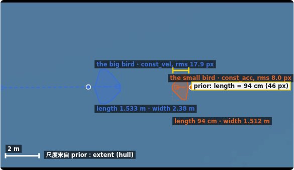
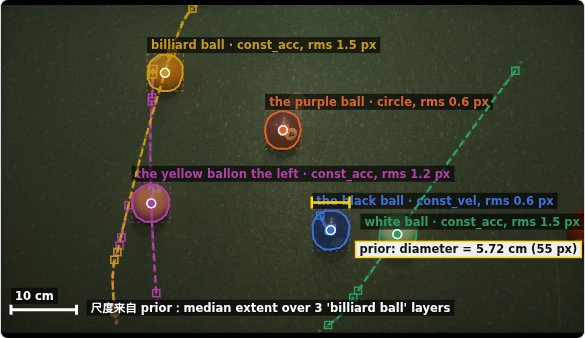
| 配置 | 总分 | S2 | D2 | S3 | D3 | 2D 题 MRA=0 |
|---|---|---|---|---|---|---|
| 基线：不用场景值 | 0.6195 | 0.594 | 0.551 | 0.686 | 0.647 | 12 |
| v1（场景值作为第二个提示） | 0.6558 | 0.609 | 0.681 | 0.686 | 0.647 | 8 |
| v1 + Qwen 无数字时回退到场景值 | 0.6636 | 0.641 | 0.681 | 0.686 | 0.647 | 7 |
| v2（采用） | 0.6680 | 0.669 | 0.670 | 0.686 | 0.647 | 8 |
v2 直接用场景值作答（route --scene2d） | 0.6515 | 0.622 | 0.651 | 0.686 | 0.647 | 13 |
v1 → v1 + 回退的 +0.008 全部来自 simulation_0163（Qwen 对"1 s 时球的加速度"没给数字，v1 场景值 0.337，真值 0.339；v2 的场景值是 0.388，所以这个视频在 v2 里低了 0.033）。v2 再 +0.004；S2 +0.028，D2 −0.011 在噪声范围内（单个类别重跑一次会波动 ±0.03）。直接用场景值作答 S2、D2 都更低，2D 题 MRA=0 多 5 题，没采用。
| 视频 | 题数 | v1 + 回退 | v2 | 变化 | 说明 |
|---|---|---|---|---|---|
| simulation_0089 | 6 | 0.467 | 0.633 | +0.167 | length / width 语义修正，见下 |
| internet_0004 | 4 | 0.375 | 0.500 | +0.125 | prior 是尺子刻度，v2 不再用它定尺度，场景值不再误导 Qwen |
| internet_0019 | 7 | 0.843 | 0.914 | +0.071 | — |
| internet_0013 | 6 | 0.717 | 0.717 | 0 | — |
| simulation_0098_segmented | 4 | 0.925 | 0.925 | 0 | — |
| simulation_0196 | 4 | 0.000 | 0.000 | 0 | 气泡只动几个像素，尺度不可靠 |
| simulation_0171 | 8 | 0.675 | 0.662 | −0.013 | — |
| simulation_0163 | 6 | 0.783 | 0.750 | −0.033 | Qwen 无数字回退的那题，v2 场景值 0.388（真值 0.339，v1 为 0.337） |
| internet_0001 | 3 | 0.667 | 0.633 | −0.033 | — |
| internet_0027 | 5 | 0.820 | 0.780 | −0.040 | — |
| internet_0005 | 4 | 0.700 | 0.650 | −0.050 | — |
| simulation_0193 | 12 | 0.708 | 0.650 | −0.058 | 木星直径一题，Qwen 两次作答的噪声 |
v1 把包围框的宽当 length、高当 width。鸟水平飞、翅膀上下展开，所以"宽"（翼展）其实在竖直方向。v2 按朝向量：length 沿飞行方向，width 垂直于它。
| 题目 | v1 场景值 | v2 场景值 | 真值 |
|---|---|---|---|
| 大鸟的宽 (m) | 0.97 | 2.38 | 2.04 |
| 小鸟的宽 (m) | 0.60 | 1.51 | 1.30 |
小鸟这题 Qwen 仍然答了 0.597（没采信场景值）。
代码 pipeline/scene2d.py、pipeline/extents2d.py、pipeline/objects.py、pipeline/scenegraph.py、pipeline/route.py（主 repo commit 323cfa0）；场景 json 和背景图 outputs/scene2d_eval/s2d_v2/；验证集逐题结果 outputs/val_s2d_v2_routed.csv。没有新的测试集提交文件（测试集现阶段不跑），最新提交仍是 outputs/submission_v6.csv。
和 3D 的场景拟合对称：2D 视频相机固定、物体大致在一个平面里运动，所以不建三维场景，而是拆成图层。
--hint2d-mode second），几何值仍是第一个提示；路由不变。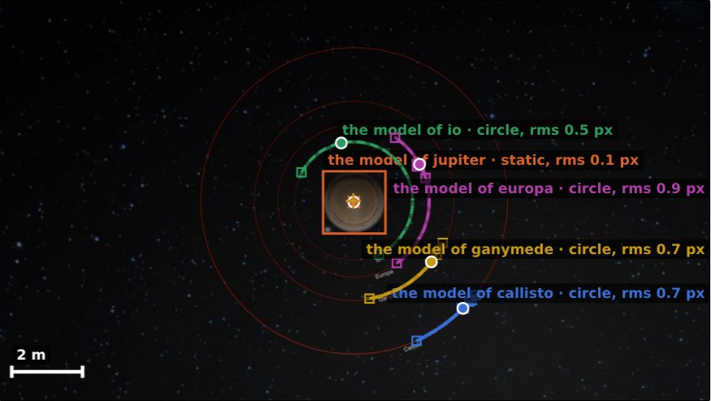
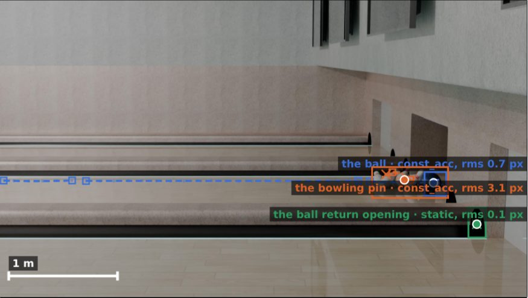
| 场景值的用法 | 总分 | S2 | D2 | S3 | D3 | 2D 题 MRA=0 |
|---|---|---|---|---|---|---|
| 基线：不用场景值 | 0.6195 | 0.594 | 0.551 | 0.686 | 0.647 | 12 |
直接用场景值作答（route --scene2d） | 0.6184 | 0.522 | 0.619 | 0.686 | 0.647 | 18 |
场景值替换几何提示（--hint2d-mode replace） | 0.6501 | 0.619 | 0.649 | 0.686 | 0.647 | 10 |
场景值作为第二个提示（--hint2d-mode second，采用） | 0.6558 | 0.609 | 0.681 | 0.686 | 0.647 | 8 |
噪声对照：同样的提示再问一遍，S2 差 0.013、D2 差 0.006。所以 D2 +0.13 是真提升，S2 +0.015 在噪声内。3D 题不受影响。
| 视频 | 题数 | 基线 | 采用后 | 变化 | 说明 |
|---|---|---|---|---|---|
| simulation_0193 | 12 | 0.383 | 0.708 | +0.325 | 卫星轨道题：轨道直径和线速度来自共心圆周模型 |
| internet_0013 | 6 | 0.517 | 0.717 | +0.200 | 白车速度 5.55（真值 5.79）、花坛直径 19.7（真值 20.4）；尺度来自行人步速 prior |
| simulation_0171 | 8 | 0.562 | 0.675 | +0.113 | 宇航员 1 s 时速度 5.05（真值 4.89）；尺度来自身高 prior |
| simulation_0098_segmented | 4 | 0.825 | 0.925 | +0.100 | 鲨鱼长 3.25（真值 3.26）；尺度来自鲨鱼速度 prior |
| simulation_0163 | 6 | 0.550 | 0.617 | +0.067 | 保龄球分三段匀加速 |
| internet_0001 | 3 | 0.633 | 0.667 | +0.033 | — |
| internet_0005 | 4 | 0.675 | 0.700 | +0.025 | — |
| internet_0019 | 7 | 0.857 | 0.843 | −0.014 | — |
| internet_0027 | 5 | 0.840 | 0.820 | −0.020 | — |
| simulation_0089 | 6 | 0.517 | 0.467 | −0.050 | 鸟只在 7–10 帧里可见 |
| internet_0004 | 4 | 0.500 | 0.375 | −0.125 | prior 是尺子刻度，刻度不是可跟踪的物体 |
| simulation_0196 | 4 | 0.175 | 0.000 | −0.175 | prior 是气泡速度，气泡只动了 5 px，尺度不可靠 |
D2 比基线高（0.619），但 S2 掉到 0.522，总分 0.6184 不如基线。prior 给错尺度时（尺子刻度、车道、气泡这类 prior 物体量不准），场景值整体偏，只能靠 Qwen 看画面纠正；作为提示时 Qwen 可以不采信。场景值替换几何提示（0.6501）的 S2 略高，但 D2 低 0.032，总分不如同时给两个数（0.6558）。
代码 pipeline/scene2d.py（主 repo commit 9216d4d）；场景 json 和背景图 outputs/scene2d_eval/s2d_v1/；验证集逐题结果 outputs/val_s2d_v1_routed.csv。没有新的测试集提交文件（测试集现阶段不跑），最新提交仍是 outputs/submission_v6.csv。
只针对 2D 题（S2、D2），所有模型都是开源模型，满足 Track B 的要求。验证集共 69 道 2D 题（S2 32 道，D2 37 道），测试集共 1741 道。
| 阶段 | 做法 |
|---|---|
| 1 问题解析 | 规则解析器，同前（parse.py） |
| 2 指认与跟踪 | Grounding DINO 找物体；DINO 找不到的物体由 Qwen3-VL-8B 给框（vLLM 本地服务）；SAM 2 做视频跟踪（perceive.py） |
| 3 像素测量 | 用框和轨迹量像素长度、速度和加速度（physics.py）；关闭掩码尺寸和动态 prior 检查，因为消融显示这两项没有帮助（--disable mask,dyncheck） |
| 4 标定与求解 | m/px = prior 的物理量 ÷ prior 的像素量，再换算成目标量（calibrate.py、solve.py） |
| 5 校验 | 做合理范围检查；测不出来或结果不合理时，先填验证集中位数常数（verify.py） |
| 6 VLM 兜底（新） | 第 5 步填了常数的题，改用 Code-as-World-VL-9B（基于 Qwen3.5-9B，Apache 2.0）直接看视频作答：输入 16 帧，长边缩到 854 px。VLM 的答案同样要通过合理范围检查，不通过就保留常数（vlm.py、mix.py） |
python -m pipeline.run --split test --dim 2 --disable mask,dyncheck --out outputs/test_2d.csv
python -m pipeline.vlm --split test --dim 2 --engine server --tag caw_test_2d # 需要 vLLM 运行 Code-as-World-VL-9B
python -m pipeline.mix --geo test_2d.csv --vlm caw_test_2d.csv --out test_2d_mix.csv| 版本 | S2 | D2 | 说明 |
|---|---|---|---|
| 流水线 v1（10-04） | 0.463 | 0.341 | Grounding DINO + SAM 2 |
| 几何 + Qwen 指认 | 0.478 | 0.376 | 所有功能都打开；去掉 Qwen 后 D2 降到 0.368 |
| 几何 + Qwen 指认，关闭 mask/dyncheck | 0.487 | 0.386 | 纯几何方案里最好的一版，测试集用的就是这个配置 |
| Qwen3-VL-8B 直接作答 | 0.331 | 0.378 | |
| Code-as-World-VL-9B 直接作答 | 0.391 | 0.457 | D2 明显好于几何，S2 不如几何 |
| Agent：Qwen 选框并校验跟踪 | 0.456 | 0.332 | 没有采用：Qwen 8B 的 yes/no 校验误删了正确的轨迹（误删 19 题，只救回 7 题） |
| 几何 + Code-as-World 兜底（当前） | 0.503 | 0.508 | 只替换几何方法测不出来的题 |
| 参考：Gemini 3 Flash 直接作答 | 0.463 | 0.592 | 闭源模型，不能用于 Track B |
"当前"这一行是用 mix.py 的规则在"所有功能都打开"的几何结果上算出来的。合并方式稍有不同时，分数在 0.50 到 0.53 之间。
parsed_value），每天最多 3 次计分提交，上传后立即返回 MRA，但只有自己队伍可见。提交物、复现包和奖金等细节见附录“提交细节”。
| 数据集 | 本地路径 | 大小 | 视频 | 编号组 | QA 数 | 每视频题数 | 有答案 |
|---|---|---|---|---|---|---|---|
测试集 PaulineLi/QuantiPhy | data/QuantiPhy/ | 507 MB | 568 | 408 | 3,289 | 1 到 19，中位数 5 | 否 |
验证集 PaulineLi/QuantiPhy-validation | data/QuantiPhy-validation/ | 6 MB | 24（在 validation_videos/ 下） | 24 | 159 | 3 到 13，中位数 6 | 是 |
下载：在仓库根目录运行 ./download_data.sh，约 515 MB，下载到 data/。字段和单位的细节见附录。
四类的规模（编号组 = 去掉后缀的编号，如 captured_0054；每个编号组及其所有变体只属于一个类别，所以编号组数相加正好是 408；但编号不同的同一事件可能分属 2D 和 3D 两类，见附录）：
| 类别 | 题数 | 视频 | 编号组 | 有变体的编号组 | 来源：simulation / captured / internet | 问题量纲：尺寸 / 速度 / 加速度 |
|---|---|---|---|---|---|---|
| D2（Dynamic 2D） | 1,163 | 221 | 185 | 35 | 152 / 1 / 32 | 906 / 243 / 14 |
| D3（Dynamic 3D） | 969 | 135 | 85 | 30 | 65 / 20 / 0 | 752 / 205 / 12 |
| S2（Static 2D） | 579 | 112 | 91 | 21 | 49 / 0 / 42 | 275 / 225 / 79 |
| S3（Static 3D） | 578 | 100 | 47 | 31 | 31 / 16 / 0 | 308 / 225 / 45 |
| 合计 | 3,289 | 568 | 408 | 117 | 297 / 37 / 74 | 2,241 / 898 / 150 |
下面两个验证集视频都是仿真渲染，prior 都是“人的身高”，可以直接对比。左边是 2D，右边是 3D。
simulation_0171Prior：height of the astronaut = 2.2 m
depth_info：无
相机从侧面平视，宇航员沿着画面左右跳跃，运动基本都在同一个平面里。整段视频中宇航员离相机的距离几乎不变，所以“1 像素等于多少米”在整个画面里是一个固定比例，用身高 2.2 m 标定一次即可。
| 类型 | 问题 | 答案 |
|---|---|---|
| SD | What is the speed of the astronaut at time 1s in m/s? | 4.89 |
| SD | What is the acceleration of the astronaut at time 2s in m/s^2? | 0.705 |
simulation_0015Prior：height of the person = 1.87 m
depth_info：
t=0s, distance_human_camera = 12.26 m
t=1s, distance_human_camera = 10.97 m
distance_the_pedestal_of_the_central_sculpture_and_camera = 9.460 m
distance_the_centeral_sculpture_camera = 9.460 m
distance_the_nearest_freestanding_art_display_panel = 11.874 m相机有透视，人朝着相机走来，1 秒内离相机从 12.26 m 变到 10.97 m，画面里越走越大。被问的雕塑、展板、长椅、屋顶各自离相机的距离都不一样，不能直接用人的像素身高去量它们，必须结合 depth_info 里的距离做透视换算。
| 类型 | 问题 | 答案 |
|---|---|---|
| SS | What is the height of the central sculpture itself (excluding the pedestal) in meters? | 1.97 |
| SS | What is the clear height from the floor to the underside of the open roof frame in meters? | 12.9 |
| 2D（video_type 第 2 位 = 2） | 3D（video_type 第 2 位 = 3） | |
|---|---|---|
| 相机与运动 | 侧视或俯视，物体在与画面平行的平面内运动 | 有透视，物体会靠近或远离相机，或者多个物体处在不同深度 |
| 像素到米的换算 | 全画面一个固定比例，用 prior 标定一次 | 比例随距离变化，近大远小，需要按每个物体、每个时刻的距离分别换算 |
depth_info 字段 | 全部为空 | 全部有值，给出某些时刻某些物体到相机的距离。判断 2D / 3D 看这一列即可，两者一一对应 |
| 评测类别 | S2 / D2 | S3 / D3 |
| 规模：题 / 视频 / 编号组 / 相机视角 | 1,742 / 333 / 276 / 276 | 1,547 / 235 / 132 / 135 |
相机视角 = 编号组 + 机位：只换背景的变体与原视频共用同一视角，a / b 两个机位算两个。
基于 test_dataset.parquet 与 validation_dataset.parquet 的统计（2026-10-04），只列对解题有影响的几条，明细见附录。
x / _segmented 后缀的 148 个视频本身就是精确的分割掩码，同组的其他版本可以直接借用。fps 列换算成帧号（共 9 种帧率）。video_source 拼成了 segmentaion，测试集是 segmentation，合并数据时要统一。captured_0010 的分割版后缀是大写 X）；simulation_0032、0038、0115 只有分割版。captured_0041x.mp4 的文件名开头多了一个空格，download_data.sh 已自动处理。parsed_value 会被取绝对值，所以符号不影响得分。depth_info 有 19 行格式不规范（14 个视频）：缺 _camera（如 simulation_0017 的 distance_the_freestanding_art_display_panel = 4.223m）、名字里有空格（0015、0017、0188）、单位写成 s（captured_0029、0030）。主仓库 pipeline/data.py 的 parse_depth_info 会静默丢掉这些行。Mean Relative Accuracy。官方实现在 evaluator.py，用 evaluate.sh 启动。大致思路是对每个预测在一组相对误差阈值 θ 上判断是否命中，再对阈值取平均，最后按类别（S2、D2、S3、D3）汇总。
| 时间 | 交什么 | 谁要交 |
|---|---|---|
| 10 月 23 日 23:59 AoE 前 | 一个 CSV 预测文件：官方模板 quantiphy_submission_template.csv（已在 data/），3,289 行，每行一道题（不能用 video_id 当行标识）。id 不动，只填 parsed_value：纯数字、不带单位、按题目要求的单位，文件最大 2 MB。两个赛道用同一模板，每次上传时选择计入 Track A 或 B。 | 所有队伍 |
| 赛后通知起 14 天内 | 可复现包：代码或 Docker 容器，供官方复跑验证分数。 | 每赛道前三名 |
| 赛后 | 代码公开：Track A 仅前三名需公开；Track B 官网写的是所有参赛作品都要公开。 | 见左 |
| 11 月 | 技术报告 / 简短技术总结：官方邀请头部队伍提交。开发中用过闭源 API 输出的（比如用 Track A 结果辅助 Track B），必须在技术报告里说明。 | 受邀队伍 |
| 12 月 11–12 日 | NeurIPS workshop 口头报告：第一名 10 分钟，第二、三名 5 分钟。 | 每赛道前三名 |
clone 仓库后在仓库根目录运行自带脚本即可，只依赖 bash、curl 和 python3：
./download_data.sh脚本会把测试集、验证集和官方提交模板 quantiphy_submission_template.csv 下载到 data/ 目录，共约 515 MB。该目录已 gitignore。脚本可重复运行，已下载且大小正确的文件会自动跳过，结束时会校验文件数量和大小。
表格每行的 video_id 就是视频文件名（不含 .mp4）。一个 video_id 对应唯一一个视频；一个视频有多道题，所以同一 video_id（如 simulation_0082）会出现在多行，各行的 question 和 inference_type 不同。
测试集 parquet 有 8 列：video_id, video_source, video_type, fps, inference_type, question, prior, depth_info。验证集多一列 answer。
运行 download_data.sh 后，parquet 位于 QuantiPhy 仓库的 data/QuantiPhy/test_dataset.parquet（验证集为 data/QuantiPhy-validation/validation_dataset.parquet）。脚本不会生成 CSV，想直接打开看可在仓库根目录自行导出：
python3 -c "import pandas as pd; pd.read_parquet('data/QuantiPhy/test_dataset.parquet').to_csv('data/QuantiPhy/test_dataset.csv', index=False)"video_source | 说明 | 视频数（测试集） | 问题数 |
|---|---|---|---|
| simulation 仿真 | Blender 渲染（Sketchfab / BlenderKit 资产），物理参数完全可控 | 294 | 1,633 |
| lab 实验室 | 实拍的真实运动，场景中常有标尺或校准网格。视频 id 前缀为 captured_ | 115 | 806 |
| segmentation 分割 | 用 SAM 抠出运动前景、背景换成纯色的对照版本 | 85 | 430 |
| internet 互联网 | 野外真实视频，背景杂乱、光照变化、有遮挡 | 74 | 420 |
帧率以 24 fps 为主（420 个视频），其余有 22、25、26、30、33、50、60、120，共 9 种。1,000 道题指定了具体时刻（如 "at 1.5s"），抽帧时要用表格的 fps 列把时刻换算成帧号（与 pipeline/data.py 一致）。
只涉及平移运动学：尺寸 / 距离（长、宽、高、厚度、直径、间距、位移）、速度（瞬时、时段平均、水平）、加速度（瞬时、平均、重力，统一取 9.8 m/s²）。每个样本 = 1 个视频 + 1 个 prior + 1 个问题。测试集分布：
| 量纲 | 被问的物理量（题数） | 答案单位（题数） | 问题小计 | prior 关键词（题数） | prior 小计 |
|---|---|---|---|---|---|
| 尺寸 / 距离 | 长度 576 高度 555 距离 / 位移 438 宽度 397 直径 / 半径 255 厚度 5 其他（size、spacing、breadth 等）15 | meters 1,642 cm 593 mm 6 | 2,241 | diameter 476 length 302 height 220 width 146 radius 5 其他（size、ruler calibre 等）22 | 1,171 |
| 速度 | 速度 898 | m/s 680 cm/s 218 | 898 | speed 817 velocity 224 | 1,041 |
| 加速度 | 加速度 150 | m/s² 135 cm/s² 15 | 150 | acceleration 774 gravity 303 | 1,077 |
| 合计 | 3,289 | 3,289 |
按关键词归类，每题只计一次：问题按 加速度 → 速度 → 距离 → 尺寸 的优先级匹配（含 velocoty、diatance 等拼写错误；“speedboat” 不算速度）；单位取问题中 “in <单位>” 的位置，不论在句中还是句尾；prior 按 gravity → acceleration → velocity → speed → 尺寸词 的优先级匹配。每一行的问题量纲与答案单位量纲逐题一致。prior 量纲与 inference_type 首字母有 28 题不一致（21 题标 D 但 prior 是尺寸，7 题标 S 但 prior 是速度，来自 internet_0067、internet_0073、simulation_0084、0190、0280、0281），评测类别以 inference_type 为准。
有 47 道题的单位写在句中（如 "What is the height, in meters, of ..."）而非句尾，解析单位时不能只看结尾。验证集答案范围从 0.00175 到 1086，中位数 3.6。MRA 是相对误差，量级本身不影响评分，但答案为 0 或非数值会被判无效。
inference_type 两个字母分别表示 prior 与答案的类型：S = 静态量（长度、尺寸），D = 动态量（速度、加速度）。测试集：DS 1,684、SS 597、SD 560、DD 448。
video_type 是 36 种四位编码（如 S2MC、A3MC、V2MS）：
| 位 | 含义 | 测试集分布（题数） |
|---|---|---|
| 第 1 位 | prior 的类型：S 尺寸、V 速度、A 加速度 | S 1,167 / V 1,061 / A 1,061 |
| 第 2 位 | 维度：2 平面运动、3 有深度 | 2D 1,742 / 3D 1,547 |
| 第 3 位 | 物体数：S 单个、M 多个 | M 2,502 / S 787 |
| 第 4 位 | 背景：C 原始、S 简化、X 分割掩码 | C 1,548 / S 930 / X 811 |
captured_ 实拍的多变体编号组。captured_ 的 37 个编号组只有 captured_0015 在 2D，其余都是 3D。以下 5 个样例来自验证集，所以带有答案。每个视频配一个已知物理量（prior）和若干问题，类型标签和评测类别的含义见“题目类型与评测类别”。
internet_0027 互联网视频S2MC25 fps评测类别 S2Prior：billiard ball diameter = 57.2 mm
| 类型 | 问题 | 答案 |
|---|---|---|
| SS | What is the initial distance between the balck ball and the purple ball in cm? | 14.74 |
| SD | What is the white ball's average velocity in 1.00s to 2.00s in cm/s? | 26.82 |
| SD | What is the velocity of the orange ball at 1.00s in cm/s? | 24.99 |
| SS | What is the final distance between the purple ball and the black ball in cm? | 18.04 |
| SD | What is the acceleration of the yellow ballon the left at 2.00s in cm/s^2? | 11 |
internet_0001 互联网视频S2SC24 fps评测类别 S2Prior：lane width = 3.66 m
| 类型 | 问题 | 答案 |
|---|---|---|
| SS | What is the length of the black car in meters? | 5.81 |
| SS | What is the width of the black car in meters? | 2.21 |
| SD | What is the average speed of the black car in m/s? | 29.3 |
captured_0013 实验室拍摄A3MC24 fps评测类别 D3Prior：t=1.5, ball acceleration = 3.0 m/s^2
| 类型 | 问题 | 答案 |
|---|---|---|
| DS | What is the height of the cup in cm? | 14.5 |
| DS | What is the length of the pen in cm? | 14.5 |
| DS | What is the diameter of the cookie in cm? | 8 |
| DS | What is the width of the note book in cm? | 10.8 |
| DS | What is the width of the desk in cm? | 857.9 |
| DS | What is the length of the slope in cm? | 30.8 |
| DS | What is the diameter of the ball in cm? | 6.7 |
| DD | What is the velolicty of the ball at 1.5s in cm/s? | 102.65 |
simulation_0163 仿真渲染S2MC24 fps评测类别 S2Prior：diameter of the ball = 0.21 m
| 类型 | 问题 | 答案 |
|---|---|---|
| SD | What is the speed of the ball at time 0.5s in m/s? | 3.148 |
| SD | What is the acceleration of the ball at time 0.5s in m/s^2? | 0.359 |
| SD | What is the speed of the ball at time 1s in m/s? | 2.974 |
| SD | What is the acceleration of the ball at time 1s in m/s^2? | 0.339 |
| SS | What is the height of the bowling pin in meters? | 0.32 |
| SS | What is the height of the ball return opening in meters? | 10 |
simulation_0098_segmented 仿真 + 分割掩码V2MX24 fps评测类别 D2Prior：speed of the shark = 3 m/s
| 类型 | 问题 | 答案 |
|---|---|---|
| DD | What is the average speed of the boat in m/s? | 5 |
| DS | What is the length of the boat in meters? | 10 |
| DS | What is the length of the shark in meters? | 3.26 |
| DS | What is the height of the shark in meters? | 1.11 |
为什么合理。QuantiPhy 本质上是一个测量问题：所有题目都是"已知一个物理量，求另一个"，两者通过比例尺或运动学公式严格相关。端到端 VLM 对数值不敏感，官方 GPT-5.1 基线在验证集上只有 MRA 0.486，而且 6.3% 的答案无效。一个显式的"跟踪 + 标定 + 计算"流水线，只要测量误差能控制在 10% 以内，单题 MRA 就能接近 0.9。按编号组而不是按视频处理也正确：568 个视频只有 408 个编号组，117 个编号组各有 2 到 6 个变体。只换背景的变体（s、x、_segmented）与原视频共用同一相机和同一段运动，重建一次即可复用；题目大多相同但不完全一致，需按题目文本对齐。编号不同的同一事件（如黑猫 simulation_0210 到 0217）机位不同，相机要分别估计，但物体尺寸和运动轨迹相同，可以在视频之间互相校验。
x 或 _segmented 后缀的变体本身就是分割掩码视频，等于官方免费给了 148 个视频的精确物体分割。同编号组的原始背景版（C）和简化背景版（S）可以直接借用它的掩码和轨迹，不必再跑分割模型。左列是设计目标，右列是代码里目前做到的程度。
| 阶段 | 设计 | 当前实现 |
|---|---|---|
| 0 问题解析 | 每道题抽出：目标物理量、目标物体、时刻、答案单位、prior 的物体和数值。输出结构化 JSON。 | parse.py：规则解析器，覆盖全部 233 种 prior 写法，不调用 LLM。后续若换 LLM，Track A 可用 GPT / Claude，Track B 用 Qwen2.5-VL 或 Qwen3。 |
| 1 场景重建（每编号组一次） | 抽帧；指认题目涉及的所有物体；分割并逐帧跟踪，得到每个物体每帧的 mask、bbox、中心轨迹。有分割变体的编号组直接用掩码。 | perceive.py：Grounding DINO 在 6 个采样帧上找物体，取分数最高的框作为提示，SAM 2 向前向后传播掩码，轨迹用掩码质心；掩码视频直接用前景像素。轨迹缓存到 outputs/tracks/，单个视频约 10 秒。 |
| 2 尺度标定 | 2D：用 prior 物体的像素尺寸（或像素速度）得到比例尺 m/px。3D：用 prior 物体的像素尺寸和 depth_info 里的相机距离反推焦距 f，之后任意物体 真实尺寸 = 像素尺寸 × 距离 / f；速度的纵向分量用 depth_info 在不同时刻的差分。 | calibrate.py：按设计实现。物体视大小变化时按针孔关系 Z(t) = Z₀·h(t₀)/h(t) 生成逐帧深度并得到径向速度；用框的宽和高中变化较小的那个作为大小依据。实验室相机焦距若反推落在 450 到 950 px 之外，改用 650 px 先验。 |
| 3 物理拟合与计算 | 静态量：像素尺寸 × 比例尺。速度：轨迹平滑后一阶差分，或拟合匀速 / 匀加速模型后取导数。加速度：二阶，或直接取拟合参数。时刻按该视频 fps 精确定位到帧。prior 为重力加速度的 303 道题对抛体轨迹拟合抛物线反推比例尺。 | physics.py：Savitzky-Golay 平滑，局部二次拟合求速度和加速度，位移、平均速度、抛物线拟合重力。横向 = 像素偏移 × 深度，纵向 = 深度序列，再求导得到真实三维速度。solve.py：一道题到一个数。 |
| 4 校验与 agent 优化 | 三类一致性检查：同编号组不同变体答案应一致；同物体多道题互相约束；物理合理性范围。失败时 agent 诊断原因并重试：换指认提示、换帧、换拟合模型、改用另一变体的掩码。仍失败则回退到 VLM 直接回答。 | verify.py：目前只有合理范围检查、同编号组变体取中位数、兜底常数（避免空值和 0 被判无效）。agent 重试和 VLM 回退是下一步。 |
辅助文件：data.py 读取数据、编号组与变体分组、解析 depth_info、按数据集 fps 把时刻换算成帧号；metrics.py 实现与官方 evaluator.py 完全一致的 MRA。
v1 按视频来源：分割掩码视频 0.87，实验室 0.62，仿真 0.46，互联网 0.35。v0 到 v1 的提升来自三处：
加速度 prior 的题从 0.27 提到 0.52，实验室视频从 0.38 提到 0.62。
结论：不需要每个编号组都重建。2D 不需要；3D 的 132 个编号组只有 31 个静态环境，且只有 69 个编号组的被问物体缺深度。3D 题中 73% 问运动物体，背景只需建到“地面 + 相机 + 被问到的几个静止物体”。
depth_info 是否覆盖被问的物体。每道题问的物体都有深度时，针孔模型 + 给定深度即可，不需要重建（63 个编号组）。有物体没给深度时，需要重建或用度量单目深度补上（69 个编号组）。缺深度的大多是静态背景：岩石、车道、路灯、桌子。| 类别 | 编号组数 | 被问物体缺深度 |
|---|---|---|
| S2（Static 2D） | 91 | 0（不需要） |
| D2（Dynamic 2D） | 185 | 0（不需要） |
| S3（Static 3D） | 47 | 25 |
| D3（Dynamic 3D） | 85 | 44 |
| 合计 | 408 | 69 |
| 环境 | 编号组 | 缺深度的被问物体 | 能否共用 |
|---|---|---|---|
| 白色十字路口（E04） | simulation_0058–0063、0065–0067（9 个） | 车道、路缘、路灯、红绿灯 | 同一仿真场景、同一段运动，机位不同：静态几何重建一次，各视角做相机配准 |
| 涂鸦白墙街道（E05） | simulation_0033、0052、0055 | 车道、路灯 | 同一街道、同一辆橙色车，机位不同；与 E04 不是同一环境 |
| 草地中央带路口（E16） | simulation_0064 | 车道、红绿灯 | 同一事件（白车 4 m/s²），但路口几何与 E04 不同，单独重建 |
| 湖边木屋码头（E12） | simulation_0009 | 木楼梯 | 与 S3 的 0008 共用 |
| 海边沙丘（E02 / E03） | simulation_0024（E02）、0037（E03）、0038（只有分割版） | 岩石、船舱地板 | E02 内共用；E03 待确认是否同一地图 |
| 小镇街道（骑车人、行人） | simulation_0045、0049、0050 | 电话亭、门柱、台阶 | depth_info 完全相同，很可能是同一事件多机位，可联合重建；与 S3 的 0046、0048 共用 |
| 桌面（打字机、放大镜） | simulation_0202、0205、0206、0209 | 桌子、打字机 | 同一环境 |
| 室内黑猫 | simulation_0211、0212 | 台灯、花瓶 | 同一环境 |
| 血细胞 | simulation_0109、0110 | 两个细胞的间距 | 同一事件 |
| 实验室：重力抛物 | captured_0006、0008、0009、0010、0018、0020 | 玩具、篮球、绳长 | 同一台相机（焦距已知），摆放不同，逐个处理 |
| 实验室：踢球 | captured_0041 | 人（问球到人的距离，只给了球的深度） | 单独处理 |
| 实验室：斜坡滚球 | captured_0013、0014 | 小球（只给了静态物体深度） | 见“已知失败模式” |
| 实验室：白板 | captured_0062 | 白板本身 | 单独处理 |
| 其他 | simulation_0032（只有分割版）、0141（地砖）、0168（警车）、0180（闸门）、0195（木星模型）、0242（房子、窗户） | 见括号 | 各自重建 |
| 环境 | 编号组 | 缺深度的被问物体 | 能否共用 |
|---|---|---|---|
| 湖边木屋码头（E12） | simulation_0008 | 木楼梯、码头 | 与 D3 的 0009 共用 |
| 海边白色沙丘（E02） | simulation_0022、0027、0028、0043、0044 | 岩石、船舱地板、人的步行速度 | 与 D3 的 E02 组同一环境 |
| 实验室乒乓球桌 | captured_0021、0022、0029、0031、0032、0036 | 桌子的长和宽 | 很可能同一张桌子、同一台相机，桌子尺寸测一次可复用 |
| 实验室其他 | captured_0027（红球） | 被问的球本身没给深度 | 单独处理 |
| 保龄球（E16） | simulation_0164 | 保龄球瓶（只给了球的深度） | 单独处理 |
| 小镇街道 | simulation_0046、0048 | 电话亭、门柱、台阶 | 与 D3 的 0045 / 0049 / 0050 共用 |
| 路口 | simulation_0074 | 方形土台 | 与 D3 白色十字路口（E04）共用 |
| 汽车（轮胎为 prior） | simulation_0149、0150；0151、0152 | 车速、加速度、柱子间距 | 各组内共用 |
| 其他 | simulation_0015（中庭长椅、屋顶）、0140（霓虹灯牌）、0143（地砖）、0144（火箭、车） | 见括号 | 各自重建 |
其中 6 个编号组没有可重建的环境（E00，背景已去除或纯色）：D3 的 simulation_0032、0038（只有分割版）、0109、0110（血细胞）、0195（木星模型），S3 的 captured_0021（背景已去除）。这些缺的深度没法靠重建背景补，只能用度量单目深度或物体的先验尺寸。
判断规则：被问物体（距离题还包括第二个物体）的名字没有出现在同一视频的 depth_info 里，即为缺深度；编号组内任一题缺深度，就算需要重建。2026-10-08 用 pipeline/parse.py 解析题目物体、逐题复核，修正了 4 个编号组：删 captured_0016（两人都有深度）、captured_0035（两个球都有深度），加 captured_0041、simulation_0164，总数不变。边界情况按“有深度”处理：simulation_0030（问 eagle，depth_info 只写 bird）、0176（stone cliff 对应 big rock，起落架轮子按机头深度）。“重建”不一定是完整的逆渲染：缺的多是静态背景深度，用度量单目深度模型估深度图、再用 depth_info 已知深度对齐尺度，可能就够了。
3D 两类共 132 个编号组，每组看一帧（代表视频的中间时刻），按静态几何人工归并：地面、墙、家具、道路、地形相同即同一环境。机位、光照、云、阳光不同，或多了猫、警车等运动物体，都不算新环境；摆设或地点不同才算。
captured_0021 标为原始背景（S3SC），但三个版本的背景都已去除（白、蓝、黑）。| 编号 | 环境 | 编号组 | D3 / S3 | 编号组列表（链接到代表视频） | 备注 |
|---|---|---|---|---|---|
| E01 | 实验室（灰色隔板房间） | 33 | 18 / 15 | cap_0006、cap_0008、cap_0009、cap_0010、cap_0013、cap_0014、cap_0016、cap_0018、cap_0020、cap_0022、cap_0023、cap_0024、cap_0027、cap_0028、cap_0029、cap_0030、cap_0031、cap_0032、cap_0033、cap_0034、cap_0035、cap_0036、cap_0037、cap_0038、cap_0039、cap_0040、cap_0041、cap_0047、cap_0052、cap_0053、cap_0054、cap_0061、cap_0062 | 房间壳体固定；桌子、三脚架、人的位置在变。0035、0053、0062 朝向房间另一侧（门外有人）。0001、0002、0021 背景已去除，归入 E00 |
| E02 | 海边白色沙丘 + 红船 | 15 | 8 / 7 | 0022、0023、0024、0025、0026、0027、0028、0029、0030、0031、0039、0040、0042、0043、0044 | 同一张地图：红船、老鹰、行人、白色沙丘；有平视、俯视、远景多种机位。0038 只有分割版，归入 E00 |
| E03 | 海面 + 金色沙丘 | 4 | 1 / 3 | 0034、0035、0036、0037 | 待确认：也有红船和行人，但远处是金色长沙丘，光照偏暖，可能是 E02 换了朝向，也可能是另一张地图 |
| E04 | 白色十字路口 | 10 | 9 / 1 | 0058、0059、0060、0061、0062、0063、0065、0066、0067、0074 | 0074 为 S3，其余为 D3。0064 的路口中间是草地、两侧有楼，几何不同，归入 E16 |
| E05 | 涂鸦白墙街道 | 5 | 4 / 1 | 0021、0033、0052、0055、0056 | 与 E04 不是同一环境；0056 是沿街另一方向的机位 |
| E06 | Photo Lab 小镇街道 | 5 | 3 / 2 | 0045、0046、0048、0049、0050 | depth_info 完全相同的 0045 / 0049 / 0050 很可能是同一事件多机位 |
| E07 | 美术馆中庭 | 4 | 2 / 2 | 0015、0016、0017、0019 | 0016、0017 为俯视 |
| E08 | 草地谷仓 | 4 | 3 / 1 | 0010、0011、0013、0014 | 与 E12 的木屋不是同一建筑；是否在同一张大地图里看不出 |
| E09 | 地下停车场 | 4 | 0 / 4 | 0149、0150、0151、0152 | 0151 / 0152 多一辆蓝色小车 |
| E10 | 书房书桌 | 4 | 4 / 0 | 0202、0205、0206、0209 | 0206 多了椅子和台灯，桌子和墙相同 |
| E11 | 仓库传送带 | 3 | 3 / 0 | 0182、0184、0186 | 三个视频只换了箱子 |
| E12 | 湖边木屋（码头） | 2 | 1 / 1 | 0008、0009 | 与海边沙丘（E02 / E03）不是同一环境 |
| E13 | 隧道走廊 | 2 | 1 / 1 | 0141、0143 | |
| E14 | 黑猫房间 1 | 2 | 2 / 0 | 0211、0212 | 同一房间在 D2 有 0210、0213（正机位） |
| E15 | 月球 | 2 | 0 / 2 | 0170、0172 | 同一事件在 S2 有 0169、0171 |
| E16 | 单独环境（各 1 组） | 16 | 11 / 5 | 0064、0140、0144、0159、0164、0168、0176、0180、0188、0201、0242、0307、0308、0309、0310、0311 | 0164 保龄球馆（S2 有 0163）、0168 夜间路口（D2 有 0165–0167）、0176 海岛（D2 有 0173、0175）；其余在 3D 中只出现一次 |
| E00 | 无环境（纯色或背景已去除） | 17 | 15 / 2 | cap_0001、cap_0002、cap_0021、0032、0038、0109、0110、0195、0299、0300、0301、0302、0303、0304、0305、0306、0312 | 不需要重建环境，只有前景物体：纯色或天空背景（0109、0110、0299–0306、0312）、太空（0195）、只有分割版（0032、0038）、实拍去背景（captured_0001、0002、0021） |
E01 实验室（灰色隔板房间）（33）
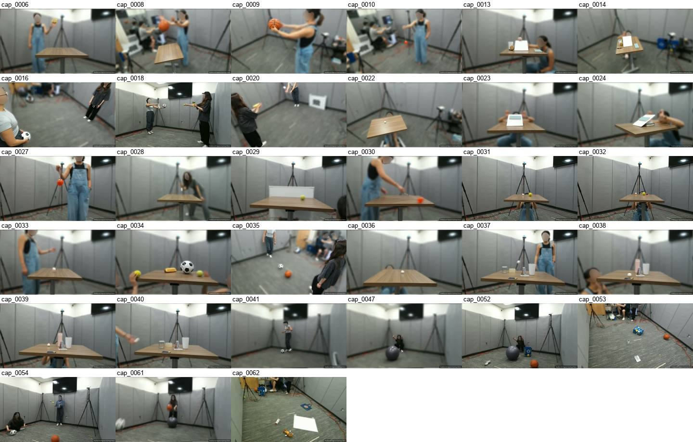
E02 海边白色沙丘 + 红船（15）
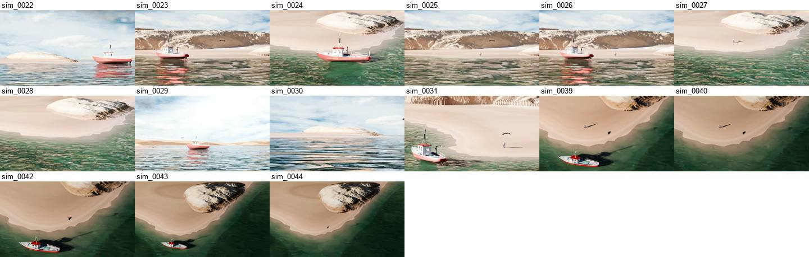
E03 海面 + 金色沙丘（4）
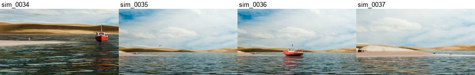
E04 白色十字路口（10）
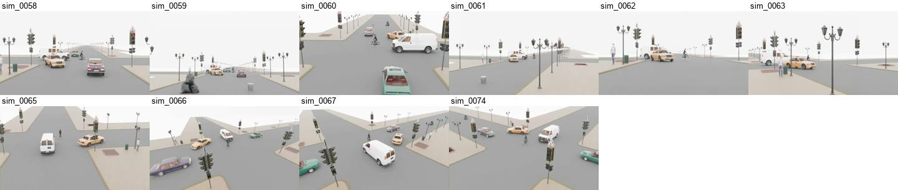
E05 涂鸦白墙街道（5）
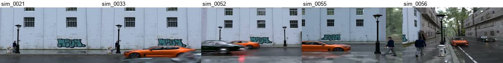
E06 Photo Lab 小镇街道（5）
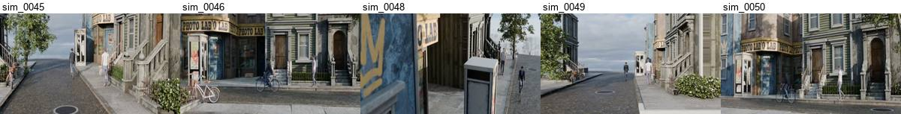
E07 美术馆中庭（4）
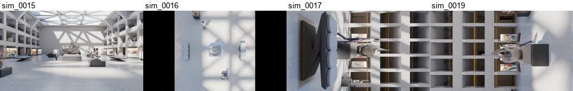
E08 草地谷仓（4）
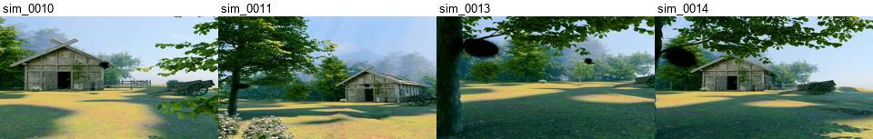
E09 地下停车场（4）
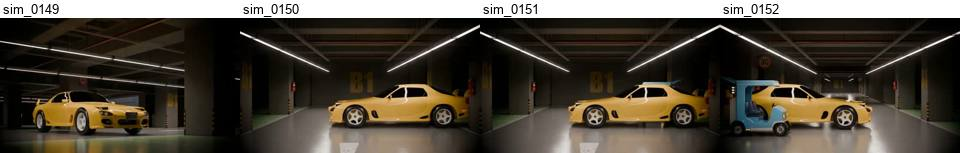
E10 书房书桌（4）
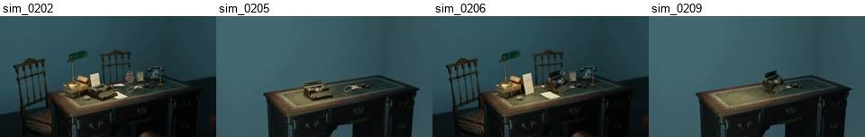
E11 仓库传送带（3）
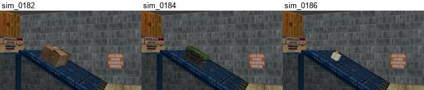
E12 湖边木屋（码头）（2）
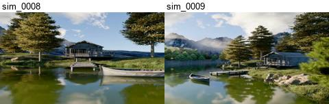
E13 隧道走廊（2）
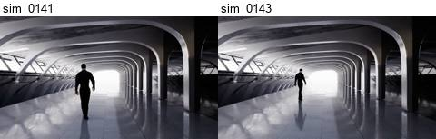
E14 黑猫房间 1（2）
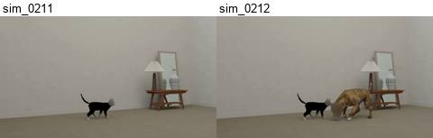
E15 月球（2）
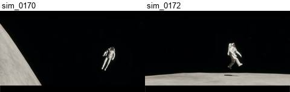
E16 单独环境（各 1 组）（16）
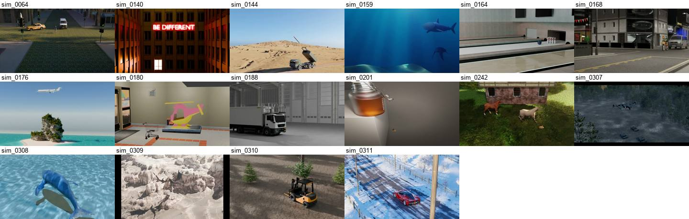
E00 无环境（纯色或背景已去除）（17）
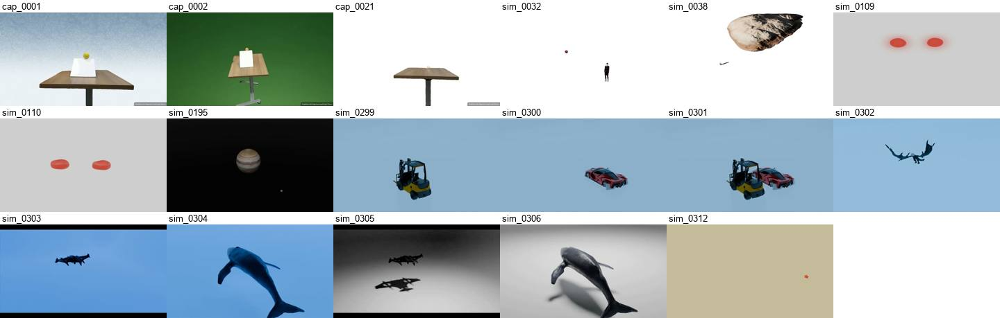
前景是视频里会动的物体（球、人、车、猫），尺寸和速度可以从它的运动加 prior 算出。背景是静止物体（桌子、路灯、车道、花瓶），视频里没有运动可用，只能靠场景的 3D 几何来量。这里的“背景”指静止物体，与“去背景”无关：去背景版里仍可见的桌子、斜坡也算背景。
| 类别 | 题数 | 问前景 | 问背景 | 背景占比 |
|---|---|---|---|---|
| D3 | 969 | 725 | 244 | 25% |
| S3 | 578 | 406 | 172 | 30% |
| 合计 | 1,547 | 1,131 | 416 | 27% |
| 例子 | prior | 问前景 | 问背景 |
|---|---|---|---|
simulation_0211 黑猫 | 猫速 0.94 m/s | 猫的长、高，猫到相机的距离 | 长凳、台灯、灯罩、花瓶、落地镜（8 题） |
simulation_0062 路口 | 白车加速度 4 m/s² | 白车、黄车、行人、自行车的尺寸和速度 | 车道宽、红绿灯高、路灯高（3 题） |
captured_0023 书滑下斜坡 | 书在 1.4 s 的加速度 | 书的速度、尺寸、位移 | 斜坡长宽、桌子宽（3 题） |
simulation_0015 美术馆 | 人高 1.87 m | 人的速度（1 题） | 雕塑、底座、展板、长椅、屋顶框架（9 题） |
分类方法：问速度、加速度、位移的算前景；问尺寸的，看该物体在 depth_info 中距离是否随时间变化、是否出现在动态 prior 或速度题里。被判为背景的物体已逐个人工复核，把会动的（钟摆绳、实验室里的人、路口其他车辆、血细胞、木星模型等）改回前景。静止的道具（未被击倒的保龄球瓶、停着的火箭发射车）算背景。误差估计在几十道题以内。
编号组 = 去掉后缀的编号（如 captured_0023），即同一次拍摄或渲染的所有版本。408 个编号组里 117 个有变体：s 简化背景、x / _segmented 分割掩码、a / b 两个机位。对实现有影响的只有以下几点，明细见附录。
captured_0010 的分割版后缀是大写 X）；simulation_0032、0038、0115 只有分割版。按测量对象分：四类各有哪几种场景（按 prior 中的物体归为 9 种，每个编号组只计一次）：
| 场景类型 | D2 | D3 | S2 | S3 | 合计 | 包括 | 示例 |
|---|---|---|---|---|---|---|---|
| 车辆 / 道路 | 34 | 21 | 19 | 8 | 82 | 汽车、路口车流、自行车、滑板车、叉车 | internet_0001 车道与汽车、simulation_0058 路口、internet_0054 滑板车 |
| 动物 | 54 | 13 | 6 | 5 | 78 | 猫、马、羚羊、浣熊、鸟、鲨鱼、鲸、鱼、蝴蝶、大象 | simulation_0227 黑猫、simulation_0274 浣熊、simulation_0030 老鹰 |
| 日常物品 / 实验器材 | 33 | 14 | 26 | 4 | 77 | 书、杯子、箱子、桌面物品、信用卡、纸巾卷、传送带 | captured_0023 书本、simulation_0202 打字机与放大镜、captured_0039 信用卡 |
| 球类 / 体育 | 17 | 15 | 21 | 14 | 67 | 乒乓球、网球、篮球、台球、保龄球、球场 | captured_0034 网球、internet_0027 台球、simulation_0163 保龄球 |
| 太空 / 飞行器 | 18 | 5 | 6 | 3 | 32 | 飞船、火箭、飞机、宇航员、天体模型、无人机、热气球 | simulation_0176 飞机、simulation_0263 飞船、simulation_0171 宇航员 |
| 人物 | 9 | 9 | 1 | 9 | 28 | 行人、步行的人 | simulation_0015 中庭行人、simulation_0142 步行的人 |
| 船只 / 水上 | 3 | 3 | 11 | 4 | 21 | 船、独木舟、帆船、游泳者、泳圈 | internet_0025 独木舟、simulation_0009 码头的船、internet_0023 游泳者 |
| 奇幻 / 机器人 | 10 | 2 | 1 | 0 | 13 | 凤凰、龙、机器人 | simulation_0269 凤凰、simulation_0309 龙、simulation_0218 机器人 |
| 微观 / 流体 | 7 | 3 | 0 | 0 | 10 | 红细胞、病毒、水滴、气泡 | simulation_0110 红细胞、simulation_0107 病毒、simulation_0201 水滴 |
| 合计 | 185 | 85 | 91 | 47 | 408 |
归类规则：按 prior 中的已知物体归类（如 prior 是 “height of the person” 就归人物，即使场景在码头）；prior 是重力加速度、不含物体时，按题目里的物体归类。按关键词自动归类，边界情况（如骑滑板车的人归车辆）以规则为准。D2 以动物为主（54 / 185），S2 以日常物品和球类为主，S3 以球类、人物和车辆为主（31 / 47）；奇幻和微观场景只出现在 Dynamic 类别（及 1 个 S2）中。
按环境分：每个编号组截一帧（优先原视频的中间时刻），按画面背景人工归为 9 种环境：
| 环境 | D2 | D3 | S2 | S3 | 合计 | 示例 |
|---|---|---|---|---|---|---|
| 纯色 / 摄影棚背景 | 45 | 13 | 17 | 1 | 76 | simulation_0076 灰底行人、simulation_0269 凤凰、simulation_0198 水滴 |
| 室内房间 | 29 | 10 | 12 | 7 | 58 | simulation_0214 客厅、simulation_0187 仓库、simulation_0231 教室、simulation_0149 地下车库 |
| 城市道路 / 街景 | 21 | 18 | 10 | 6 | 55 | simulation_0058 路口、simulation_0045 小镇街道、internet_0001 高速俯拍 |
| 水面 / 水下 / 码头 | 18 | 13 | 13 | 11 | 55 | simulation_0023 海滩与船、simulation_0154 水下鲨鱼、internet_0025 湖面独木舟、internet_0039 泳池 |
| 桌面 / 近景 | 24 | 4 | 16 | 0 | 44 | internet_0043 桌面物品、internet_0034 纸巾卷、simulation_0203 书桌打字机 |
| 户外自然 | 30 | 6 | 4 | 3 | 43 | simulation_0236 草地房屋、simulation_0243 森林雪山、simulation_0310 林地叉车 |
| 实验室房间（实拍） | 1 | 20 | 0 | 16 | 37 | captured_0054、captured_0021、captured_0013：同一间灰墙实验室 |
| 体育场地 | 8 | 0 | 15 | 1 | 24 | internet_0009 网球场俯拍、simulation_0160 台球桌、simulation_0162 保龄球道、internet_0057 室内篮球馆 |
| 太空 / 天空 | 9 | 1 | 4 | 2 | 16 | simulation_0193 木星卫星模型、simulation_0170 月面宇航员、simulation_0088 天空飞鸟 |
| 合计 | 185 | 85 | 91 | 47 | 408 |
captured_）在同一间实验室：灰色隔板墙、三脚架、同一张桌子，相机也是同一台。S3 的 16 个和 D3 的 20 个实拍编号组共享同一个房间。归类按截帧画面人工判断，每个编号组只看一帧，边界情况：俯拍的高速 / 乡间公路归城市道路；泳池、湖、海、水下都归水面；室内但只拍到桌面或墙面局部的归桌面 / 近景；户外球场归体育场地。
编号组是去掉后缀的编号（如 captured_0023），即同一次拍摄或渲染的所有视频版本）。变体是同一编号组的不同视频版本：内容和运动相同，只是背景处理或机位不同。408 个编号组里有 117 个有变体，变体模式共 7 种：
| 变体模式 | 编号组数 | 视频数 | D2 / D3 / S2 / S3 | 示例 | 说明 |
|---|---|---|---|---|---|
| 只有原视频 | 288 | 288 | 149 / 53 / 70 / 16 | simulation_0176 | 没有变体 |
原视频 + _segmented | 82 | 164 | 34 / 12 / 21 / 15 | simulation_0227、internet_0001 | 用 SAM 抠出运动前景，背景换成纯色（video_source = segmentation） |
原视频 + s + x | 30 | 90 | 1 / 15 / 0 / 14 | captured_0023、captured_0021 | 实拍专用：s 简化背景，x 分割掩码 |
a / as / ax / b / bs / bx | 3 | 18 | 0 / 1 / 0 / 2 | captured_0034、0035、0054 | 同一次实验的两个机位 × 三种背景（见下方“变体示例”） |
只有 _segmented | 3 | 3 | 1 / 2 / 0 / 0 | simulation_0032、0038、0115 | 原视频不在测试集里 |
原视频 + s | 1 | 2 | 0 / 1 / 0 / 0 | captured_0006 | 缺少 x 版 |
原视频 + s + X | 1 | 3 | 0 / 1 / 0 / 0 | captured_0010 | 分割版后缀是大写 X，按后缀解析时要忽略大小写 |
每个编号组的所有变体都在同一个类别里。变体之间的题目大多相同，但不总是完全一样：117 个编号组里只有 59 个的题目完全相同。常见差异是分割版删掉了针对已被抠掉的背景物体的题（如 captured_0027 原视频多一道 shoulder breadth 题，s / x 版没有）。另有 14 个编号组的 prior 在变体之间写法不同，个别数值也不同（如 internet_0005 的 walking velocity 原视频为 1.25 m/s，分割版为 1.4 m/s）。做一致性检查时应按题目文本对齐，不要假设整组题相同。
编号 captured_0054 是同一次实验（滚动的橙色球和足球）的 6 个视频：两个机位（a / b），每个机位各有原始、简化背景（s）、分割掩码（x）三种背景。6 个视频共用同一个 prior（velocity of the orange ball at 0.5s = 2.21 m/s）和同一份 depth_info，video_type 第 4 位依次为 C / S / X。点击文件名可在 HuggingFace 打开。
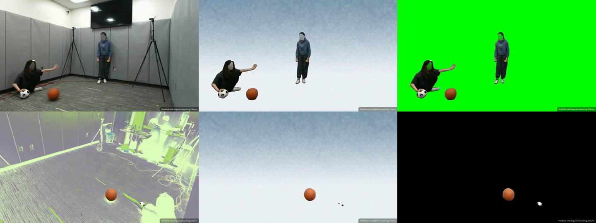
| video_id | video_type | 题数 | 内容 |
|---|---|---|---|
captured_0054a | V3MC | 12 | 原始实拍，机位 A：广角，从侧面看两人传球 |
captured_0054as | V3MS | 12 | a 版抠出人和球，背景换成简化背景（去掉实验室） |
captured_0054ax | V3MX | 11 | a 版分割掩码：人和球保留，背景为纯绿色 |
captured_0054b | V3MC | 12 | 同一次实验，机位 B：从坐地者身后看球滚远；球保留原色，其余画面经 SAM 2 Demo 特效处理（偏绿、反色） |
captured_0054bs | V3MS | 12 | b 版抠出两个球，背景换成简化背景 |
captured_0054bx | V3MX | 12 | b 版分割掩码：只保留两个球，背景为纯黑 |
HuggingFace 上的文件列表与数据表（每个 video_id 对应多行题目）：
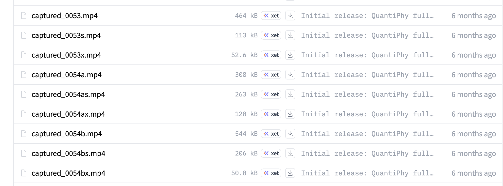
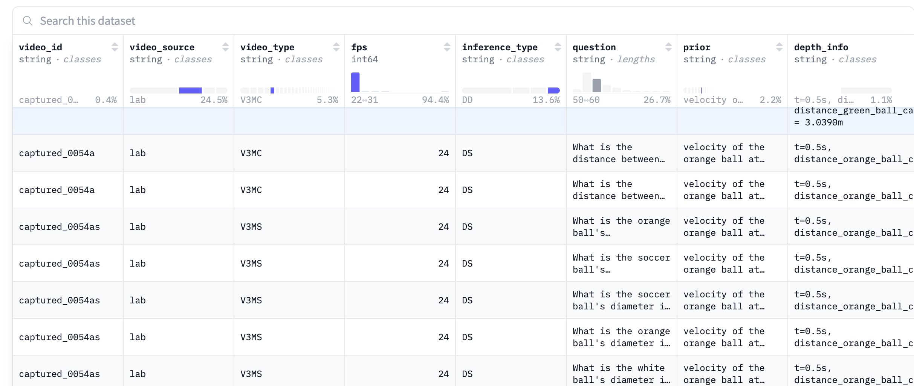
后缀之外，还有不少编号不同的 simulation 视频是同一个事件：同一物体、同一运动，prior 数值相同；变的是机位、缩放、光照、家居摆设或干扰物体。
例 1：黑猫，simulation_0210 到 0217（8 个编号，prior = speed of the black cat 0.94 m/s）。分两套房间布置，每套里组合机位、第二只猫和阳光效果。
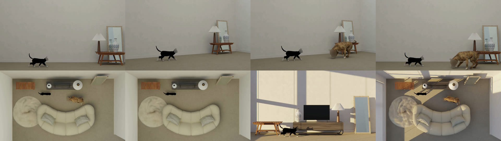
| video_id | video_type | 类别 | 题数 | 房间 | 内容 |
|---|---|---|---|---|---|
simulation_0210 | V2MS | D2 | 10 | 房间 1 | 正机位，一只黑猫 |
simulation_0211 | V3MS | D3 | 12 | 侧面机位，一只黑猫，轨迹与 0210 相同 | |
simulation_0212 | V3MC | D3 | 16 | 机位同 0211，多一只花猫；黑猫轨迹与 0211 完全相同 | |
simulation_0213 | V2MC | D2 | 14 | 机位同 0210，多一只与 0212 相同的花猫；黑猫轨迹与 0210 相同 | |
simulation_0214 | V2MC | D2 | 13 | 房间 2（背景和家居摆设与房间 1 完全不同） | 俯视，两只猫，与 0213 相同 |
simulation_0215 | V2MC | D2 | 11 | 俯视，一只黑猫，轨迹与 0210 / 0211 相同 | |
simulation_0216 | V2MC | D2 | 14 | 平视，同一只黑猫，加了阳光效果 | |
simulation_0217 | V2MC | D2 | 14 | 猫、轨迹、家居摆设都与 0214 相同，加了阳光效果 |
其他例子。
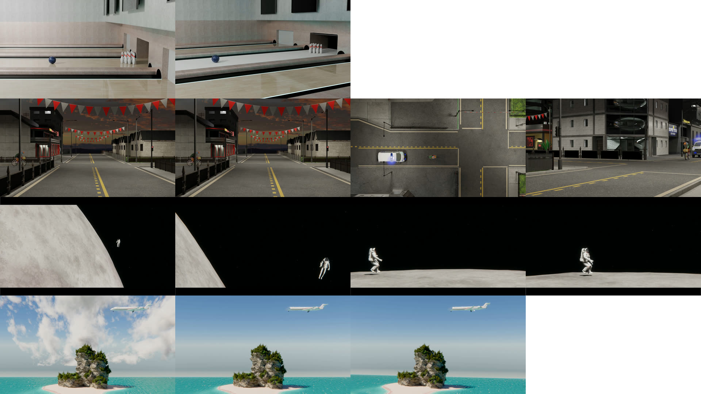
| 事件（prior） | 视频与类别 | 区别 |
|---|---|---|
| 保龄球 diameter of the ball = 0.21 m | 0163 S20164 S3 | 0163 正前方；0164 侧上方 |
| 人骑车过十字路口 speed of the bike = 5.52 m/s | 0165 D20166 D20167 D20168 D3 | 天色昏暗的十字路口。0166 比 0165 多一辆跟在骑手身后的警车，其余完全一样；0167 俯视，背景环境和人能看出不同，但风格与 0165 / 0166 / 0168 相同；0168 倾斜视角并拉近，环境背景略有不同 |
| 月球上的宇航员 height of the astronaut = 2.2 m | 0169 S20170 S30171 S20172 S3 | 0169 远景，月球大、人小；0170 拉近，人大、只见月球一部分；0171 和 0172 站在月面上，0171 平视、0172 斜视 |
| 飞机飞过小岛 speed of the airplane = 153.582 m/s | 0173 D20175 D20176 D3 | 三者背景和飞机相同。0173 与 0175 角度也相同，只是 0173 多了云；0176 与 0175 相同，但角度斜 |
严格匹配的其他重复组（prior 与题目完全相同）还有：0076/0077、0082/0083、0085/0086、0096/0097、0099/0100、0102/0103、0128/0129、0151/0152、0154/0155、0179/0180、0221/0222、0251/0252、0255/0256、0264/0267、0265/0266/0268、0269/0271/0272、0275/0277、0285/0287、0286/0303/0305/0307、0288/0290、0292/0293、0294/0295（同一只蝴蝶，一个灰色空背景，一个蘑菇森林）、0302/0309、0304/0306/0308（均为 simulation）。
每类给出 4 个示例，展开可看该类全部编号组（编号组、所含视频、题数、prior）。
prior 是速度或加速度，平面运动。示例：
| 编号组 | 视频（变体） | 题数 | prior | 示例问题 |
|---|---|---|---|---|
captured_0015 | captured_0015captured_0015scaptured_0015x | 15 | Gravity acc = 9.8m/s^2 | What is the height of the person in cm? |
simulation_0227 | simulation_0227simulation_0227_segmented | 19 | speed of the black cat = 1.041m/s | What is the length of the black cat (including its tail) in meters? |
internet_0055 | internet_0055 | 8 | average speed of the person riding scooter = 1.95 m/s | What is the height of the walking person in meters? |
simulation_0158 | simulation_0158 | 8 | acceleration of the turtle = 2.639 m/s^2 | What is the length of the turtle in meters? |
| 编号组 | 视频 | 题数 | prior |
|---|---|---|---|
captured_0015 | captured_0015captured_0015scaptured_0015x | 15 | Gravity acc = 9.8m/s^2 |
internet_0005 | internet_0005internet_0005_segmented | 8 | walking velocity = 1.25m/s |
internet_0013 | internet_0013 | 6 | pedestrian walking speed = 1.1 m/s |
internet_0019 | internet_0019internet_0019_segmented | 14 | gravity acc = 9.8m/s^2 |
internet_0028 | internet_0028 | 2 | velocity of the conveyer belt = 0.5 m/s |
internet_0029 | internet_0029 | 6 | gravity acceleration = 9.8 m/s^2 |
internet_0043 | internet_0043 | 8 | velocity of the white ball at 1.0s = 33.38 cm/s |
internet_0044 | internet_0044 | 10 | gravity acceleration = 9.8 m/s^2 |
internet_0045 | internet_0045 | 6 | velocity of the rolling cylinder = 107.3 cm/s |
internet_0047 | internet_0047 | 6 | velocity of the rolling ball at 0.5s = 2.94m/s |
internet_0048 | internet_0048 | 8 | gravity acceleration = 9.8 m/s^2 |
internet_0049 | internet_0049 | 7 | average speed of the person riding scooter = 3.8 m/s |
internet_0050 | internet_0050 | 7 | average speed of the person riding scooter = 2.9 m/s |
internet_0051 | internet_0051 | 5 | average speed of the person riding scooter = 2.07 m/s |
internet_0052 | internet_0052 | 6 | average speed of the person riding scooter = 2.91 m/s |
internet_0053 | internet_0053 | 10 | average speed of the person riding scooter = 4.46 m/s |
internet_0054 | internet_0054 | 6 | average speed of the person riding scooter = 4.9 m/s |
internet_0055 | internet_0055 | 8 | average speed of the person riding scooter = 1.95 m/s |
internet_0056 | internet_0056 | 3 | average speed of the person riding scooter = 2.64 m/s |
internet_0057 | internet_0057 | 9 | gravity acceleration = 9.8 m/s^2 |
internet_0058 | internet_0058 | 9 | gravity acceleration = 9.8 m/s^2 |
internet_0059 | internet_0059 | 9 | gravity acceleration = 9.8 m/s^2 |
internet_0060 | internet_0060 | 6 | gravity acceleration = 9.8 m/s^2 |
internet_0061 | internet_0061 | 6 | gravity acceleration = 9.8 m/s^2 |
internet_0062 | internet_0062 | 6 | gravity acceleration = 9.8 m/s^2 |
internet_0063 | internet_0063 | 6 | gravity acceleration = 9.8 m/s^2 |
internet_0064 | internet_0064 | 8 | gravity acceleration = 9.8 m/s^2 |
internet_0065 | internet_0065 | 8 | gravity acceleration = 9.8 m/s^2 |
internet_0066 | internet_0066 | 10 | gravity acceleration = 9.8 m/s^2 |
internet_0067 | internet_0067 | 4 | height of the acorn = 8 cm |
internet_0068 | internet_0068 | 8 | acceleration of the acorn from 2.00s to 2.30s = 0.77m/s^2 |
internet_0069 | internet_0069 | 8 | acceleration of the cup from 2.00s to 2.30s = 0.32m/s^2 |
internet_0070 | internet_0070 | 5 | velocity of the speedboat at 1.00s = 11 m/s |
simulation_0012 | simulation_0012simulation_0012_segmented | 6 | speed of the bird =6m/s |
simulation_0020 | simulation_0020 | 3 | gravity acc = 9.8m/s^2 |
simulation_0047 | simulation_0047 | 4 | speed of the walking person = 1.236m/s |
simulation_0053 | simulation_0053 | 5 | acceleration of the orange car = -2.86m/s^2 |
simulation_0054 | simulation_0054 | 6 | acceleration of the orange car = -2.86m/s^2 |
simulation_0057 | simulation_0057simulation_0057_segmented | 6 | acceleration of the orange car = -2.86m/s^2 |
simulation_0068 | simulation_0068simulation_0068_segmented | 10 | acceleration of the white car = 4m/s^2 |
simulation_0069 | simulation_0069 | 3 | acceleration of the white car = 4m/s^2 |
simulation_0072 | simulation_0072 | 1 | speed of the bicycle = 5.33m/s |
simulation_0073 | simulation_0073 | 7 | speed of the bicycle = 5.33m/s |
simulation_0076 | simulation_0076 | 3 | speed of the person in the black shirt = 1m/s |
simulation_0077 | simulation_0077 | 3 | speed of the person in the black shirt = 1m/s |
simulation_0078 | simulation_0078 | 3 | speed of the person in the white shirt = 1.3m/s |
simulation_0084 | simulation_0084 | 7 | speed of the yellow car = 5.07m/s |
simulation_0085 | simulation_0085 | 7 | acceleration of the car = 4.03m/s^2 |
simulation_0086 | simulation_0086 | 7 | acceleration of the car = 4.03m/s^2 |
simulation_0087 | simulation_0087 | 7 | speed of the bike = 5.07m/s |
simulation_0088 | simulation_0088 | 6 | speed of the big bird = 17.98m/s |
simulation_0090 | simulation_0090 | 4 | speed of the small bird = 11m/s |
simulation_0091 | simulation_0091 | 4 | speed of the small bird = 11m/s |
simulation_0094 | simulation_0094 | 4 | speed of the car = 30m/s |
simulation_0095 | simulation_0095 | 5 | acceleration of the car = 10m/s^2 |
simulation_0096 | simulation_0096 | 5 | acceleration of the car = 10m/s^2 |
simulation_0097 | simulation_0097 | 5 | acceleration of the car = 10m/s^2 |
simulation_0098 | simulation_0098simulation_0098_segmented | 8 | speed of the shark = 3m/s |
simulation_0101 | simulation_0101simulation_0101_segmented | 10 | acceleration of the shark = 1m/s^2 |
simulation_0102 | simulation_0102simulation_0102_segmented | 12 | acceleration of the shark = 1m/s^2 |
simulation_0103 | simulation_0103simulation_0103_segmented | 12 | acceleration of the shark = 1m/s^2 |
simulation_0104 | simulation_0104 | 3 | the lifting speed of the charging post = 0.2m/s |
simulation_0105 | simulation_0105 | 4 | gravity acc = 9.8m/s^2 |
simulation_0106 | simulation_0106 | 3 | speed of the right virus = 1.5667m/s |
simulation_0107 | simulation_0107 | 3 | speed of the right virus = 1.7393m/s |
simulation_0108 | simulation_0108 | 3 | speed of the left virus = 1.7393m/s |
simulation_0111 | simulation_0111 | 3 | speed of the boat = 2m/s |
simulation_0112 | simulation_0112simulation_0112_segmented | 7 | speed of the car = 6.66m/s |
simulation_0114 | simulation_0114simulation_0114_segmented | 6 | acceleration of the plane = 18m/s^2 |
simulation_0115 | simulation_0115_segmented | 5 | acceleration of the boat = 3m/s^2 |
simulation_0116 | simulation_0116simulation_0116_segmented | 10 | gravity acc = 9.8m/s^2 |
simulation_0117 | simulation_0117 | 5 | gravity acc = 9.8m/s^2 |
simulation_0118 | simulation_0118 | 6 | speed of the toy car = 0.05m/s |
simulation_0119 | simulation_0119 | 5 | speed of the chess = 0.04m/s |
simulation_0120 | simulation_0120 | 5 | speed of the robot cleaner = 1m/s |
simulation_0122 | simulation_0122 | 1 | gravity acc = 9.8m/s^2 |
simulation_0123 | simulation_0123simulation_0123_segmented | 12 | speed of the cup = 0.338m/s |
simulation_0124 | simulation_0124simulation_0124_segmented | 14 | speed of the black car = 26.085m/s |
simulation_0125 | simulation_0125 | 4 | speed of the person = 1.22 m/s |
simulation_0127 | simulation_0127 | 8 | speed of the bike = 24m/s |
simulation_0128 | simulation_0128simulation_0128_segmented | 4 | gravity acceleration = 9.8m/s^2 |
simulation_0129 | simulation_0129simulation_0129_segmented | 6 | gravity acceleration = 9.8m/s^2 |
simulation_0130 | simulation_0130 | 7 | speed of the car = 11.155m/s |
simulation_0131 | simulation_0131 | 2 | speed of the hot air balloon = 4m/s |
simulation_0132 | simulation_0132 | 4 | gravity acceleration = 9.8m/s^2 |
simulation_0133 | simulation_0133 | 5 | gravity acceleration = 9.8m/s^2 |
simulation_0137 | simulation_0137 | 4 | speed of the bird = 9.146m/s |
simulation_0142 | simulation_0142 | 4 | walking speed = 1.693m/s |
simulation_0154 | simulation_0154 | 2 | speed of the shark = 7 m/s |
simulation_0155 | simulation_0155 | 2 | speed of the shark = 7 m/s |
simulation_0156 | simulation_0156 | 4 | speed of the shark = 7 m/s |
simulation_0157 | simulation_0157 | 3 | acceleration of the turtle = 2.639 m/s^2 |
simulation_0158 | simulation_0158 | 8 | acceleration of the turtle = 2.639 m/s^2 |
simulation_0165 | simulation_0165 | 3 | speed of the bike = 5.52m/s |
simulation_0166 | simulation_0166 | 6 | speed of the bike = 5.52m/s |
simulation_0167 | simulation_0167 | 6 | speed of the bike = 5.52m/s |
simulation_0173 | simulation_0173 | 3 | speed of the airplane = 153.582m/s |
simulation_0175 | simulation_0175 | 3 | speed of the airplane = 153.582m/s |
simulation_0177 | simulation_0177simulation_0177_segmented | 4 | speed of the elephant = 1.424m/s |
simulation_0178 | simulation_0178simulation_0178_segmented | 10 | speed of the big elephant = 2.313m/s |
simulation_0179 | simulation_0179 | 6 | acceleration of the trolley = 1.507m/s |
simulation_0181 | simulation_0181 | 5 | acceleration of the box after 0.75s = 2.338m/s^2 |
simulation_0183 | simulation_0183 | 5 | acceleration of the tool box after 1.25s = 1.58m/s^2 |
simulation_0185 | simulation_0185 | 5 | acceleration of the gift box after 1s = 3.18m/s^2 |
simulation_0187 | simulation_0187 | 5 | acceleration of the truck = 10.757m/s^2 |
simulation_0189 | simulation_0189simulation_0189_segmented | 10 | speed of the box = 0.094m/s |
simulation_0190 | simulation_0190simulation_0190_segmented | 10 | width of the box = 1.33m |
simulation_0191 | simulation_0191simulation_0191_segmented | 14 | acceleration of the box before 0.6s = 9.8m/s |
simulation_0192 | simulation_0192simulation_0192_segmented | 10 | acceleration of the box before 0.6s = 9.8m/s |
simulation_0193 | simulation_0193 | 12 | Callisto's model speed(the outermost planet) = 0.627 m/s |
simulation_0194 | simulation_0194 | 3 | Callisto's model speed(the outermost planet) = 0.627 m/s |
simulation_0196 | simulation_0196 | 4 | speed of the bubble in the drop = 0.00144m/s |
simulation_0198 | simulation_0198 | 9 | acceleration of the droplet = 9.7m/s^2 |
simulation_0199 | simulation_0199 | 9 | acceleration of the droplet = 9.7m/s^2 |
simulation_0200 | simulation_0200 | 8 | acceleration of the droplet = 9.7m/s^2 |
simulation_0203 | simulation_0203 | 8 | acceleration of the magnifying glass before 0.5s = 9.8m/s^2 |
simulation_0204 | simulation_0204 | 7 | acceleration of the magnifying glass before 0.5s = 9.8m/s^2 |
simulation_0207 | simulation_0207 | 8 | acceleration of the typewriter before 0.45s = 9.8m/s^2 |
simulation_0208 | simulation_0208 | 7 | acceleration of the typewriter before 0.45s = 9.8m/s^2 |
simulation_0210 | simulation_0210 | 10 | speed of the black cat = 0.94m/s |
simulation_0213 | simulation_0213 | 14 | speed of the black cat = 0.94m/s |
simulation_0214 | simulation_0214 | 13 | speed of the black cat = 0.94m/s |
simulation_0215 | simulation_0215 | 11 | speed of the black cat = 0.94m/s |
simulation_0216 | simulation_0216simulation_0216_segmented | 28 | speed of the black cat = 0.94m/s |
simulation_0217 | simulation_0217 | 14 | speed of the black cat = 0.94m/s |
simulation_0218 | simulation_0218simulation_0218_segmented | 8 | speed of the big robot = 5.924m/s |
simulation_0219 | simulation_0219 | 6 | speed of the big robot = 5.924m/s |
simulation_0220 | simulation_0220 | 2 | speed of the small robot = 0.82m/s |
simulation_0225 | simulation_0225simulation_0225_segmented | 8 | speed of the black cat = 1.041m/s |
simulation_0226 | simulation_0226 | 3 | speed of the black cat = 1.041m/s |
simulation_0227 | simulation_0227simulation_0227_segmented | 19 | speed of the black cat = 1.041m/s |
simulation_0228 | simulation_0228 | 5 | speed of the black cat = 1.041m/s |
simulation_0231 | simulation_0231 | 12 | speed of the black cat = 0.714m/s |
simulation_0232 | simulation_0232 | 10 | speed of the black cat = 0.714m/s |
simulation_0233 | simulation_0233simulation_0233_segmented | 6 | speed of the black cat = 0.714m/s |
simulation_0236 | simulation_0236 | 6 | speed of the horse at the back = 0.874m/s |
simulation_0237 | simulation_0237simulation_0237_segmented | 6 | speed of the horse at the back = 0.874m/s |
simulation_0238 | simulation_0238 | 9 | speed of the horse at the back = 0.874m/s |
simulation_0239 | simulation_0239simulation_0239_segmented | 10 | speed of the horse at the back = 0.874m/s |
simulation_0240 | simulation_0240 | 11 | speed of the horse at the back = 0.874m/s |
simulation_0241 | simulation_0241 | 7 | speed of the horse at the back = 0.874m/s |
simulation_0243 | simulation_0243simulation_0243_segmented | 6 | speed of the antelope = 1.277m/s |
simulation_0244 | simulation_0244 | 6 | speed of the antelope = 1.277m/s |
simulation_0245 | simulation_0245simulation_0245_segmented | 10 | speed of the antelope = 1.277m/s |
simulation_0246 | simulation_0246 | 3 | speed of the antelope = 1.277m/s |
simulation_0247 | simulation_0247simulation_0247_segmented | 6 | speed of the deer = 1.277m/s |
simulation_0248 | simulation_0248simulation_0248_segmented | 16 | speed of the horse at the back = 0.874m/s |
simulation_0249 | simulation_0249 | 5 | speed of the horse at the back = 0.874m/s |
simulation_0257 | simulation_0257 | 7 | acceleration of the plant before 0.5s = 9.8m/s^2 |
simulation_0258 | simulation_0258 | 7 | acceleration of the pen before 0.5s = 9.8m/s^2 |
simulation_0259 | simulation_0259 | 10 | acceleration of the red cup before 0.5s = 9.8m/s^2 |
simulation_0260 | simulation_0260 | 10 | acceleration of the mug cup before 0.5s = 9.8m/s^2 |
simulation_0261 | simulation_0261simulation_0261_segmented | 8 | acceleration of the mug cup before 1s = 9.8m/s^2 |
simulation_0262 | simulation_0262 | 4 | acceleration of the red cup before 0.75s = 9.8m/s^2 |
simulation_0263 | simulation_0263 | 5 | acceleration of the spacecraft = 4m/s^2 |
simulation_0264 | simulation_0264 | 4 | acceleration of the spacecraft at 1.0s = 4m/s^2 |
simulation_0265 | simulation_0265 | 4 | acceleration of the spacecraft at 1.0s = 4m/s^2 |
simulation_0266 | simulation_0266 | 4 | acceleration of the spacecraft at 1.0s = 4m/s^2 |
simulation_0267 | simulation_0267 | 4 | acceleration of the spacecraft at 1.0s = 4m/s^2 |
simulation_0268 | simulation_0268 | 4 | acceleration of the spacecraft at 1.0s = 4m/s^2 |
simulation_0269 | simulation_0269 | 4 | acceleration of the phoenix at 2.0s = 2m/s^2 |
simulation_0270 | simulation_0270 | 4 | acceleration of the phoenix at 2.0s = 2m/s^2 |
simulation_0271 | simulation_0271 | 4 | acceleration of the phoenix at 2.0s = 2m/s^2 |
simulation_0272 | simulation_0272 | 4 | acceleration of the phoenix at 2.0s = 2m/s^2 |
simulation_0273 | simulation_0273 | 3 | acceleration of the phoenix at 2.0s = 2m/s^2 |
simulation_0278 | simulation_0278 | 3 | speed of the whale = 1.67m/s |
simulation_0279 | simulation_0279 | 3 | speed of the whale = 1.67m/s |
simulation_0280 | simulation_0280 | 3 | length of the whale = 19.17m |
simulation_0281 | simulation_0281 | 3 | length of the whale = 19.17m |
simulation_0282 | simulation_0282 | 3 | speed of the dragon = 1.29m/s |
simulation_0284 | simulation_0284 | 3 | speed of the plane = 22.16 m/s |
simulation_0285 | simulation_0285 | 3 | speed of the plane = 22.16 m/s |
simulation_0286 | simulation_0286 | 3 | speed of the plane = 22.16 m/s |
simulation_0287 | simulation_0287 | 3 | speed of the plane = 22.16 m/s |
simulation_0288 | simulation_0288 | 3 | speed of the fish = 0.67m/s |
simulation_0289 | simulation_0289 | 2 | speed of the fish = 0.67m/s |
simulation_0290 | simulation_0290 | 3 | speed of the fish = 0.67m/s |
simulation_0291 | simulation_0291 | 3 | speed of the fish = 0.67m/s |
simulation_0292 | simulation_0292 | 3 | speed of the column below the drone = 0.96m/s |
simulation_0293 | simulation_0293 | 3 | speed of the column below the drone = 0.96m/s |
simulation_0294 | simulation_0294 | 2 | speed of the butterfly = 0.32m/s |
simulation_0295 | simulation_0295 | 2 | speed of the butterfly = 0.32m/s |
simulation_0296 | simulation_0296 | 3 | speed of the butterfly = 0.32m/s |
simulation_0297 | simulation_0297 | 1 | speed of the jellyfish = 1.75m/s |
simulation_0298 | simulation_0298 | 3 | speed of the fire truck = 11.18m/s |
prior 是速度或加速度，有深度。示例：
| 编号组 | 视频（变体） | 题数 | prior | 示例问题 |
|---|---|---|---|---|
captured_0054 | captured_0054acaptured_0054ascaptured_0054axcaptured_0054bcaptured_0054bscaptured_0054bx | 71 | velocity of the orange ball at 0.5s = 2.21m/s | What is the orange ball's displacement between 0.5s and 1.0s in meters? |
captured_0023 | captured_0023captured_0023scaptured_0023x | 27 | t=1.4, book acceleration = 2.8m/s^2 | What is the velocity of the book at 1.2s in cm/s? |
simulation_0176 | simulation_0176 | 3 | speed of the airplane = 153.582m/s | What is the length of the airplane in meters? |
simulation_0011 | simulation_0011 | 6 | gravity acc = 9.8m/s^2 | What is the average speed of the bird from 0.5s to 1.0s in m/s? |
| 编号组 | 视频 | 题数 | prior |
|---|---|---|---|
captured_0001 | captured_0001 | 5 | t=1.6s, ball acceleration = 3.0m/s^2 |
captured_0002 | captured_0002 | 5 | t=1.4, ball acceleration = 4.05m/s^2 |
captured_0006 | captured_0006captured_0006s | 10 | acceleration = 9.8 m/s^2 |
captured_0008 | captured_0008captured_0008scaptured_0008x | 15 | acceleration = 9.8 m/s^2 |
captured_0009 | captured_0009captured_0009scaptured_0009x | 15 | acceleration = 9.8 m/s^2 |
captured_0010 | captured_0010captured_0010Xcaptured_0010s | 18 | gravity_acceleration = 9.8 m/s^2 |
captured_0013 | captured_0013captured_0013scaptured_0013x | 24 | t=1.5, ball acceleration = 3.0m/s^2 |
captured_0014 | captured_0014captured_0014scaptured_0014x | 33 | t=0.6, ball acceleration = 4.6m/s^2 |
captured_0016 | captured_0016captured_0016scaptured_0016x | 12 | Gravity acc = 9.8m/s^2 |
captured_0018 | captured_0018captured_0018scaptured_0018x | 57 | Gravity acc = 9.8m/s^2 |
captured_0020 | captured_0020captured_0020scaptured_0020x | 24 | Gravity acc = 9.8m/s^2 |
captured_0023 | captured_0023captured_0023scaptured_0023x | 27 | t=1.4, book acceleration = 2.8m/s^2 |
captured_0024 | captured_0024captured_0024scaptured_0024x | 30 | t=1.0, book acceleration = 2.8m/s^2 |
captured_0041 | captured_0041captured_0041scaptured_0041x | 9 | velocity of the soccer ball at 1.5s = 5.21m/s |
captured_0047 | captured_0047captured_0047scaptured_0047x | 9 | velocity of the yoga ball at 1.0s = 2.1464m/s |
captured_0052 | captured_0052captured_0052scaptured_0052x | 24 | velocity of the yoga ball at 1.0s = 2.19m/s |
captured_0053 | captured_0053captured_0053scaptured_0053x | 24 | velocity of the trashbin at 0.4s = 0.9962m/s |
captured_0054 | captured_0054acaptured_0054ascaptured_0054axcaptured_0054bcaptured_0054bscaptured_0054bx | 71 | velocity of the orange ball at 0.5s = 2.21m/s |
captured_0061 | captured_0061captured_0061scaptured_0061x | 21 | velocity of the yoga ball at 0.6s = 2.5104m/s |
captured_0062 | captured_0062captured_0062scaptured_0062x | 24 | velocity of the whiteboard at 1.4s = 1.9339m/s |
simulation_0009 | simulation_0009simulation_0009_segmented | 18 | speed of the boat = 1.5 m/s |
simulation_0011 | simulation_0011 | 6 | gravity acc = 9.8m/s^2 |
simulation_0013 | simulation_0013 | 3 | gravity acc = 9.8m/s^2 |
simulation_0014 | simulation_0014 | 6 | gravity acc = 9.8m/s^2 |
simulation_0016 | simulation_0016 | 3 | speed of the person = 1.3m/s |
simulation_0017 | simulation_0017simulation_0017_segmented | 15 | speed of the person = 1.3m/s |
simulation_0023 | simulation_0023simulation_0023_segmented | 10 | speed of the eagle = 11.84m/s |
simulation_0024 | simulation_0024simulation_0024_segmented | 9 | speed of the boat = 4m/s |
simulation_0025 | simulation_0025simulation_0025_segmented | 8 | speed of the person = 1.3m/s |
simulation_0029 | simulation_0029simulation_0029_segmented | 8 | speed of the eagle = 12m/s |
simulation_0030 | simulation_0030simulation_0030_segmented | 2 | speed of the eagle = 12m/s |
simulation_0031 | simulation_0031simulation_0031_segmented | 16 | speed of the person = 1.3m/s |
simulation_0032 | simulation_0032_segmented | 5 | gravity acc = 9.8m/s^2 |
simulation_0033 | simulation_0033 | 8 | acceleration of the orange car = -2.86m/s^2 |
simulation_0037 | simulation_0037simulation_0037_segmented | 4 | speed of the person = 1.3m/s |
simulation_0038 | simulation_0038_segmented | 3 | speed of the person = 1.3m/s |
simulation_0039 | simulation_0039simulation_0039_segmented | 14 | speed of the boat = 4m/s |
simulation_0042 | simulation_0042 | 5 | speed of the eagle = 11.84m/s |
simulation_0045 | simulation_0045 | 8 | speed of the bike = 4.87m/s |
simulation_0049 | simulation_0049 | 5 | speed of the bike = 4.87m/s |
simulation_0050 | simulation_0050 | 9 | speed of the walking person = 1.236m/s |
simulation_0052 | simulation_0052 | 9 | acceleration of the orange car = -2.86m/s^2 |
simulation_0055 | simulation_0055 | 7 | acceleration of the orange car = -2.86m/s^2 |
simulation_0056 | simulation_0056 | 6 | acceleration of the orange car = -2.86m/s^2 |
simulation_0058 | simulation_0058 | 12 | acceleration of the white car = 4m/s^2 |
simulation_0059 | simulation_0059 | 13 | acceleration of the white car = 4m/s^2 |
simulation_0060 | simulation_0060 | 11 | acceleration of the white car = 4m/s^2 |
simulation_0061 | simulation_0061 | 11 | acceleration of the white car = 4m/s^2 |
simulation_0062 | simulation_0062 | 13 | acceleration of the white car = 4m/s^2 |
simulation_0063 | simulation_0063 | 13 | acceleration of the white car = 4m/s^2 |
simulation_0064 | simulation_0064 | 12 | acceleration of the white car = 4m/s^2 |
simulation_0065 | simulation_0065 | 12 | acceleration of the white car = 4m/s^2 |
simulation_0066 | simulation_0066simulation_0066_segmented | 34 | acceleration of the white car = 4m/s^2 |
simulation_0067 | simulation_0067 | 15 | acceleration of the white car = 4m/s^2 |
simulation_0109 | simulation_0109 | 2 | speed of the red blood cell = 4.7833 m/s |
simulation_0110 | simulation_0110 | 3 | speed of the red blood cell = 4.7833 m/s |
simulation_0141 | simulation_0141 | 5 | walking speed = 1.693m/s |
simulation_0159 | simulation_0159 | 8 | acceleration of the turtle = 2.639 m/s^2 |
simulation_0168 | simulation_0168 | 8 | speed of the bike = 5.52m/s |
simulation_0176 | simulation_0176 | 3 | speed of the airplane = 153.582m/s |
simulation_0180 | simulation_0180 | 6 | acceleration of the trolley = 1.507m/s |
simulation_0182 | simulation_0182 | 5 | acceleration of the box after 0.75s = 2.338m/s^2 |
simulation_0184 | simulation_0184 | 5 | acceleration of the tool box after 1.25s = 1.58m/s^2 |
simulation_0186 | simulation_0186 | 5 | acceleration of the gift box after 1s = 3.18m/s^2 |
simulation_0188 | simulation_0188simulation_0188_segmented | 12 | acceleration of the truck = 10.757m/s^2 |
simulation_0195 | simulation_0195 | 3 | Callisto's model speed = 0.627 m/s |
simulation_0201 | simulation_0201 | 3 | acceleration of the droplet = 9.7m/s^2 |
simulation_0202 | simulation_0202 | 9 | acceleration of the magnifying glass before 0.5s = 9.8m/s^2 |
simulation_0205 | simulation_0205 | 8 | acceleration of the magnifying glass before 0.5s = 9.8m/s^2 |
simulation_0206 | simulation_0206 | 10 | acceleration of the typewriter before 0.45s = 9.8m/s^2 |
simulation_0209 | simulation_0209 | 9 | acceleration of the typewriter before 0.45s = 9.8m/s^2 |
simulation_0211 | simulation_0211 | 12 | speed of the black cat = 0.94m/s |
simulation_0212 | simulation_0212 | 16 | speed of the black cat = 0.94m/s |
simulation_0242 | simulation_0242 | 7 | speed of the brown horse = 0.874m/s |
simulation_0299 | simulation_0299 | 5 | acceleration of the forklift = 2m/s^2 |
simulation_0300 | simulation_0300 | 5 | acceleration of the car = 5m/s^2 |
simulation_0301 | simulation_0301 | 11 | acceleration of the forklift = 2m/s^2 |
simulation_0302 | simulation_0302 | 2 | speed of the dragon = 1.29m/s |
simulation_0303 | simulation_0303 | 3 | speed of the plane = 22.16 m/s |
simulation_0304 | simulation_0304 | 2 | speed of the whale = 1.67m/s |
simulation_0305 | simulation_0305 | 3 | speed of the plane = 22.16 m/s |
simulation_0306 | simulation_0306 | 2 | speed of the whale = 1.67m/s |
simulation_0307 | simulation_0307 | 3 | speed of the plane = 22.16 m/s |
simulation_0308 | simulation_0308 | 2 | speed of the whale = 1.67m/s |
simulation_0309 | simulation_0309 | 2 | speed of the dragon = 1.29m/s |
prior 是尺寸，平面运动。示例：
| 编号组 | 视频（变体） | 题数 | prior | 示例问题 |
|---|---|---|---|---|
internet_0001 | internet_0001internet_0001_segmented | 6 | lane width = 3.66m | What is the length of the black car in meters? |
simulation_0224 | simulation_0224simulation_0224_segmented | 14 | diameter of one chinese chess = 0.097m | What is the length of the chinese chess board in meters? |
internet_0042 | internet_0042 | 6 | length of the white car = 4.572 m | What is the width of the white car in meters? |
simulation_0274 | simulation_0274 | 3 | length of the raccoon = 1.51m | What is the width of the raccoon in meters? |
| 编号组 | 视频 | 题数 | prior |
|---|---|---|---|
internet_0001 | internet_0001internet_0001_segmented | 6 | lane width = 3.66m |
internet_0002 | internet_0002internet_0002_segmented | 6 | lane width = 3.66m |
internet_0003 | internet_0003internet_0003_segmented | 8 | monopoly money width = 7.5cm |
internet_0004 | internet_0004 | 4 | ruler calibre = 1cm |
internet_0006 | internet_0006 | 6 | lane width = 3.66m |
internet_0007 | internet_0007 | 4 | lane width = 3.66m |
internet_0008 | internet_0008internet_0008_segmented | 6 | sailboat length = 12m |
internet_0009 | internet_0009 | 3 | singles court width = 8.23m |
internet_0010 | internet_0010internet_0010_segmented | 4 | basketball diameter = 24cm |
internet_0011 | internet_0011 | 4 | court width= 4.88m |
internet_0012 | internet_0012 | 8 | lane width = 3.66m |
internet_0014 | internet_0014 | 5 | center circle radius = 9.15m |
internet_0015 | internet_0015 | 5 | lane width = 3.66m |
internet_0016 | internet_0016 | 4 | inner court width= 4.88m |
internet_0017 | internet_0017internet_0017_segmented | 10 | credit card width = 5.4cm |
internet_0018 | internet_0018 | 3 | singles court width = 8.23m |
internet_0020 | internet_0020 | 5 | height of the picked bottle = 11.7cm |
internet_0021 | internet_0021internet_0021_segmented | 6 | length of the airplane = 40m |
internet_0022 | internet_0022 | 9 | width of the mouse = 57mm |
internet_0023 | internet_0023 | 5 | height of the swimmer = 1.8m |
internet_0024 | internet_0024 | 6 | width of the earphone case = 45mm |
internet_0025 | internet_0025internet_0025_segmented | 6 | height of the boatman = 1.75m |
internet_0026 | internet_0026internet_0026_segmented | 12 | total height of the sofa = 90cm |
internet_0027 | internet_0027internet_0027_segmented | 10 | billiard ball diameter = 57.2mm |
internet_0030 | internet_0030 | 5 | length of the speedboat = 3.2 m |
internet_0031 | internet_0031 | 5 | length of the goal frame = 7.32m |
internet_0032 | internet_0032 | 9 | length of the boat = 3.5 m |
internet_0033 | internet_0033 | 4 | size of the fork = 20.3 cm |
internet_0034 | internet_0034 | 3 | size of toilet paper roll = 100 mm |
internet_0035 | internet_0035 | 3 | size of toilet paper core = 100 mm |
internet_0036 | internet_0036 | 4 | width of US one-dollar bill = 66.3 mm |
internet_0037 | internet_0037 | 5 | height of the swimming woman = 1.63 m |
internet_0038 | internet_0038 | 5 | width of the Apple Magic Mouse = 5.71 cm |
internet_0039 | internet_0039 | 5 | height of the swimming man = 1.68 m |
internet_0040 | internet_0040 | 3 | width of credit card = 83.98 mm |
internet_0041 | internet_0041 | 6 | size of the middle duck = 66 cm |
internet_0042 | internet_0042 | 6 | length of the white car = 4.572 m |
internet_0046 | internet_0046 | 6 | height of the cup = 10.5 cm |
internet_0071 | internet_0071 | 7 | width of the toilet paper = 10 cm |
internet_0072 | internet_0072 | 4 | lenth of the credit card = 8.56 cm |
internet_0073 | internet_0073 | 7 | velocity of the conveyor belt = 0.3m/s |
internet_0074 | internet_0074 | 8 | width of the pickleball court = 6.1 m |
simulation_0007 | simulation_0007 | 4 | length of boat = 3.62m |
simulation_0041 | simulation_0041simulation_0041_segmented | 9 | height of the person = 1.75m |
simulation_0070 | simulation_0070 | 3 | length of the yellow car = 5.44m |
simulation_0071 | simulation_0071 | 3 | length of the yellow car = 5.44m |
simulation_0075 | simulation_0075 | 12 | length of the white car = 6m |
simulation_0079 | simulation_0079 | 4 | length of the bike = 1.7m |
simulation_0080 | simulation_0080 | 4 | length of the bike = 1.7m |
simulation_0081 | simulation_0081 | 4 | length of the bike = 1.7m |
simulation_0082 | simulation_0082 | 7 | length of the yellow car = 5.67m |
simulation_0083 | simulation_0083 | 7 | length of the yellow car = 5.67m |
simulation_0089 | simulation_0089 | 6 | length of the small bird = 0.94m |
simulation_0092 | simulation_0092 | 5 | length of the car = 5.67m |
simulation_0093 | simulation_0093 | 5 | length of the car = 5.67m |
simulation_0099 | simulation_0099simulation_0099_segmented | 8 | length of the boat = 10m |
simulation_0100 | simulation_0100simulation_0100_segmented | 8 | length of the boat = 10m |
simulation_0113 | simulation_0113 | 2 | diameter of the swim ring = 1m |
simulation_0121 | simulation_0121simulation_0121_segmented | 5 | diameter of the ball = 2m |
simulation_0126 | simulation_0126 | 5 | diameter of the puck = 0.074m |
simulation_0134 | simulation_0134 | 4 | height of the toaster = 0.166m |
simulation_0135 | simulation_0135 | 4 | diameter of the cup = 0.087m |
simulation_0136 | simulation_0136 | 3 | diameter of the cup = 0.087m |
simulation_0145 | simulation_0145simulation_0145_segmented | 8 | length of the rocket = 2.9m |
simulation_0148 | simulation_0148 | 5 | width of the side windows on this train (not the door windows) = 1.8m |
simulation_0153 | simulation_0153simulation_0153_segmented | 10 | diameter of the tire of the blue car = 0.369m |
simulation_0160 | simulation_0160 | 5 | diameter of the ball = 0.0757m |
simulation_0162 | simulation_0162 | 4 | diameter of the ball = 0.21m |
simulation_0163 | simulation_0163 | 5 | diameter of the ball = 0.21m |
simulation_0169 | simulation_0169simulation_0169_segmented | 16 | height of the astronaut = 2.2m |
simulation_0171 | simulation_0171simulation_0171_segmented | 16 | height of the astronaut = 2.2m |
simulation_0197 | simulation_0197 | 8 | the horizontal width of the “skynova” text on the bottle = 0.00188m |
simulation_0221 | simulation_0221 | 16 | diameter of the vacuum cleaner = 0.438m |
simulation_0222 | simulation_0222 | 16 | diameter of the vacuum cleaner = 0.438m |
simulation_0223 | simulation_0223 | 8 | diameter of one chinese chess = 0.097m |
simulation_0224 | simulation_0224simulation_0224_segmented | 14 | diameter of one chinese chess = 0.097m |
simulation_0229 | simulation_0229 | 9 | length of the chalkboard = 5m |
simulation_0230 | simulation_0230 | 12 | length of the chalkboard = 5m |
simulation_0234 | simulation_0234 | 7 | diameter of the basketball = 0.282m |
simulation_0235 | simulation_0235 | 8 | diameter of the basketball = 0.282m |
simulation_0251 | simulation_0251simulation_0251_segmented | 8 | diameter of the soccer ball = 0.344m |
simulation_0252 | simulation_0252 | 4 | diameter of the soccer ball = 0.344m |
simulation_0253 | simulation_0253 | 8 | width of the box (side parallel to the slope) = 0.611m |
simulation_0254 | simulation_0254 | 8 | diameter of the tennis ball = 0.17m |
simulation_0255 | simulation_0255simulation_0255_segmented | 12 | diameter of the tennis ball = 0.17m |
simulation_0256 | simulation_0256 | 6 | diameter of the tennis ball = 0.17m |
simulation_0274 | simulation_0274 | 3 | length of the raccoon = 1.51m |
simulation_0275 | simulation_0275 | 3 | length of the raccoon (tail included) = 1.51m |
simulation_0276 | simulation_0276 | 3 | length of the raccoon (tail included) = 1.51m |
simulation_0277 | simulation_0277 | 3 | length of the raccoon (tail included) = 1.51m |
simulation_0283 | simulation_0283 | 2 | length of the dragon = 0.75m |
prior 是尺寸，有深度。示例：
| 编号组 | 视频（变体） | 题数 | prior | 示例问题 |
|---|---|---|---|---|
captured_0034 | captured_0034acaptured_0034ascaptured_0034axcaptured_0034bcaptured_0034bscaptured_0034bx | 48 | diameter of the tennis ball = 6.7cm | What is the velocity of the left tennis ball at 1.2s in cm/s? |
captured_0021 | captured_0021captured_0021scaptured_0021x | 15 | diameter of the ping pong ball = 40mm | What is the velocity of the ping pong ball at 1.2s in cm/s? |
simulation_0310 | simulation_0310 | 5 | height of the forklift = 2.47m | What is the speed of the forklift at 1.0s, in m/s? |
simulation_0143 | simulation_0143 | 4 | height of the man = 1.8m | What is the side length of the floor tile in meters? |
| 编号组 | 视频 | 题数 | prior |
|---|---|---|---|
captured_0021 | captured_0021captured_0021scaptured_0021x | 15 | diameter of the ping pong ball = 40mm |
captured_0022 | captured_0022captured_0022scaptured_0022x | 18 | diameter of the ping pong ball = 40mm |
captured_0027 | captured_0027captured_0027scaptured_0027x | 10 | diameter of the red ball = 7cm |
captured_0028 | captured_0028captured_0028scaptured_0028x | 18 | diameter of the ping pong ball = 40mm |
captured_0029 | captured_0029captured_0029scaptured_0029x | 16 | diameter of the tennis ball = 6.7cm |
captured_0030 | captured_0030captured_0030scaptured_0030x | 12 | diameter of the red ball = 7cm |
captured_0031 | captured_0031captured_0031scaptured_0031x | 17 | diameter of the tennis ball = 6.7cm |
captured_0032 | captured_0032captured_0032scaptured_0032x | 18 | diameter of the tennis ball = 6.7cm |
captured_0033 | captured_0033captured_0033scaptured_0033x | 9 | diameter of the ping pong ball = 40mm |
captured_0034 | captured_0034acaptured_0034ascaptured_0034axcaptured_0034bcaptured_0034bscaptured_0034bx | 48 | diameter of the tennis ball = 6.7cm |
captured_0035 | captured_0035acaptured_0035ascaptured_0035axcaptured_0035bcaptured_0035bscaptured_0035bx | 54 | diameter of the basketball = 23.2 cm |
captured_0036 | captured_0036captured_0036scaptured_0036x | 15 | diameter of the ping pong ball = 4cm |
captured_0037 | captured_0037captured_0037scaptured_0037x | 18 | diameter of the ping pong ball = 4cm |
captured_0038 | captured_0038captured_0038scaptured_0038x | 21 | length of the credit card = 85.6mm |
captured_0039 | captured_0039captured_0039scaptured_0039x | 21 | length of the credit card = 85.6mm |
captured_0040 | captured_0040captured_0040scaptured_0040x | 24 | length of the credit card = 85.6mm |
simulation_0008 | simulation_0008 | 7 | height of boat = 0.75m |
simulation_0010 | simulation_0010simulation_0010_segmented | 10 | length of the bird = 1.19m |
simulation_0015 | simulation_0015 | 10 | height of the person = 1.87m |
simulation_0019 | simulation_0019simulation_0019_segmented | 12 | height of the person = 1.87m |
simulation_0021 | simulation_0021simulation_0021_segmented | 6 | height of the person = 1.87m |
simulation_0022 | simulation_0022simulation_0022_segmented | 6 | length of the boat = 10m |
simulation_0026 | simulation_0026simulation_0026_segmented | 6 | height of the person = 1.75m |
simulation_0027 | simulation_0027simulation_0027_segmented | 5 | height of the person = 1.75m |
simulation_0028 | simulation_0028simulation_0028_segmented | 7 | length of the eagle = 0.8m |
simulation_0034 | simulation_0034simulation_0034_segmented | 12 | height of the person = 1.75m |
simulation_0035 | simulation_0035simulation_0035_segmented | 8 | height of the person = 1.75m |
simulation_0036 | simulation_0036simulation_0036_segmented | 8 | length of the boat = 10m |
simulation_0040 | simulation_0040 | 3 | length of the eagle = 0.8m |
simulation_0043 | simulation_0043simulation_0043_segmented | 7 | length of the boat = 10m |
simulation_0044 | simulation_0044 | 3 | length of the eagle = 0.8m |
simulation_0046 | simulation_0046 | 9 | diameter of the moving bicycle wheel = 0.65m |
simulation_0048 | simulation_0048simulation_0048_segmented | 12 | height of the walking person = 1.8m |
simulation_0074 | simulation_0074 | 15 | length of the white car = 6m |
simulation_0140 | simulation_0140 | 6 | width of each window frame = 1.48m |
simulation_0143 | simulation_0143 | 4 | height of the man = 1.8m |
simulation_0144 | simulation_0144 | 6 | length of the rocket = 2.9m |
simulation_0149 | simulation_0149 | 7 | diameter of the tire = 0.764m |
simulation_0150 | simulation_0150 | 10 | diameter of the tire = 0.764m |
simulation_0151 | simulation_0151simulation_0151_segmented | 10 | diameter of the tire of the yellow car = 0.764m diameter of the tire of the blue car = 0.369m |
simulation_0152 | simulation_0152 | 5 | diameter of the tire of the yellow car = 0.764m diameter of the tire of the blue car = 0.369m |
simulation_0164 | simulation_0164 | 5 | diameter of the ball = 0.21m |
simulation_0170 | simulation_0170simulation_0170_segmented | 16 | height of the astronaut = 2.2m |
simulation_0172 | simulation_0172simulation_0172_segmented | 16 | height of the astronaut = 2.2m |
simulation_0310 | simulation_0310 | 5 | height of the forklift = 2.47m |
simulation_0311 | simulation_0311 | 5 | height of the car = 1.15m |
simulation_0312 | simulation_0312 | 3 | height of the star = 0.2m |
物体都由文字明确指定，从铅笔尖到航天器都有：
| 大类 | 细分类别 | 具体物理实体（Entities） | 在数据集中的主要角色 | 常见测算物理量 / 作用 |
|---|---|---|---|---|
| 交通与道路基础设施 | 机动/非机动车辆 | white car（白车）、black car（黑车）、bus（公交）、race car（赛车）、bicycle（自行车） | 目标物体 / 参照物 | 移动速度、运动距离、车辆长度 |
| 道路设施 | straight-through lane（直行车道）、roundabout lane（环岛）、center island planter（花坛） | 环境参照物 | 道路宽度、环岛半径、轨迹基准 | |
| 人物与特定角色 | 独立行人/路人 | pedestrian（行人）、woman in yellow（黄衣女子） | 目标物体 / 参照物 | 身高、行走速度、空间深度 |
| 多角色互动 | passer（传球者/左侧人）、receiver（接球者/右侧人） | 目标物体 | 人员间距、相对速度 | |
| 特殊场景角色 | astronaut（宇航员） | 目标物体 | 3D空间速度、加速度 | |
| 动物与空中实体 | 鸟类/自然生物 | big bird（大鸟）、small bird（小鸟）、eagle（老鹰） | 目标物体 | 翼展/体长、飞行速度、相对距离 |
| 飞行器 | spaceship（飞船）、drone（无人机） | 目标物体 | 3D运动轨迹、加速度 | |
| 体育器材与球类 | 台球运动 | billiard ball（台球，按颜色区分：红、黄、蓝、黑、紫、橙、白） | 目标物体 | 碰撞后速度、球体间距 |
| 保龄球运动 | bowling pin（保龄球瓶）、rolling sphere（滚动球体）、ball return opening（回球口） | 目标物体 / 参照物 | 保龄球瓶高度、球体直径、滚动速度 | |
| 物理教具与几何体 | 力学实验教具 | pendulum（单摆）、sliding block（滑块）、track cart（轨道小车）、wood block（木块） | 目标物体 | 摆动周期、滑行加速度、速度 |
| 标准几何体 | sphere（球体）、cube（立方体）、cylinder（圆柱体） | 目标物体 | 边长、直径、体积、运动速度 | |
| 工具与微观结构 | 工具与微观目标 | saw（锯子）、pencil tip（铅笔尖） | 目标物体 | 锯切频率、微观移动速度 |
| 环境与标定参照物 | 物理标定物 | ruler / calibrated grid（刻度尺 / 标定网格） | 尺度参照物 | 像素-物理尺寸换算基准（Scale Factor） |
| 室内环境参照 | floor tiles（地板砖）、ceiling light（吸顶灯） | 环境参照物 | 地砖边长、室内坐标系基准 | |
| 户外环境参照 | road sign（路牌）、neon sign（霓虹灯牌）、street light（路灯） | 环境参照物 | Z轴深度参考、相机移动校验 |
question 显式要求计算其物理量（如 length of eagle、velocity of white car）的主体。prior 或 depth_info 中给出已知尺寸/距离（如 ruler = 1cm、distance_neonsign = 34.5m），用于推算目标物体绝对数值的基准。同一个物体（如 white car）在场景 A 中作为测算目标（求其速度），在场景 B 中可作为参照物（已知其速度，求旁边行人的身高）。
参照物（车道、地砖、网格等）常作为 prior 的载体，也是指认难点（见"已知失败模式"）。
| 子集 | 题数 | 难度 | 原因 |
|---|---|---|---|
| simulation 2D | 1,039 | 低 | 渲染干净、相机固定、物体清晰，比例尺标定最可靠。先在这里把流水线跑通。 |
| lab 3D | 791 | 中 | 有 depth_info，背景可控，还有分割变体可借用。 |
| simulation 3D / segmentation | 594 / 430 | 中 | 同上，分割版本几乎零成本。 |
| internet 2D | 420 | 高 | 背景杂乱、可能有相机运动和透视，平面假设不一定成立。这部分可能要更多依赖 VLM 回退。 |
按四类整理，每类内按时间倒序。优先收录 2024 年以后的工作。
| 年份 | 工作 | 任务 | 对我们的意义 |
|---|---|---|---|
| 2026 · arXiv | SPACENUM | 双向测试 VLM 能否把空间结构和数字互相映射（Num2Space / Space2Num）。 | 结论是现有 VLM 几乎接近随机猜，印证了“不能让 VLM 直接报数”。 |
| 2025 · arXiv | QuantiPhy（本比赛） | 给视频和一个物理量 prior，让 VLM 输出另一个物理量（尺寸、速度、加速度）的真实世界数值。 | 目标任务。论文发现 VLM 主要靠先验知识而不是视频内容作答。 |
| 2025 · arXiv | PAI-Bench | 面向 Physical AI 的综合 benchmark，覆盖视频生成与视频理解的感知和预测能力。 | 偏定性，不含数值测量，但说明“物理 AI 评测”是当前热点。 |
| 2025 · arXiv | Inferring Dynamic Physical Properties from Video Foundation Models | 从视频推断弹性、粘度、动摩擦等需要运动信息的物理属性，比较经典 CV oracle、视频基础模型 readout 和多模态 LLM 提示。 | 经典 CV 流水线作为 oracle 明显优于 VLM，和我们“显式测量 + 物理公式”的路线一致。 |
| 2025 · ICLR | PhysBench | 1 万条图文视频混合题，评测 VLM 对物体属性、关系、场景和动力学的物理理解。 | 定性为主；证明通用 VLM 的物理理解普遍偏弱。 |
| 2025 · CVPR | Thinking in Space（VSI-Bench） | 5,000 多道视频题评测多模态 LLM 的空间智能，包括物体尺寸、距离、计数等数值题。 | 最接近的“数值空间题” benchmark，但只有静态物体，没有运动量。 |
| 2024 · arXiv | Q-Spatial Bench / SpatialPrompt | 评测 VLM 对尺寸、距离的定量空间推理，并提出用参照物引导推理的零样本提示。 | 用参照物标定尺度正是本比赛 prior 的用法；提示 VLM 显式借助参照物可大幅提分。 |
| 2024 · ICML | ContPhy | 从视频学习与推理连续介质（流体、软体、绳索）的物理概念。 | 扩展到软体和流体，QuantiPhy 只涉及刚体运动学。 |
| 2023 · NeurIPS | Physion++ | 评测模型能否从视频里推断质量、摩擦、弹性、可变形性等隐含物体属性并预测结果。 | 属性推断是定性判断，不要求数值。 |
| 2020 · ICLR | CLEVRER | 合成碰撞视频上的描述、解释、预测与反事实问答。 | 物理视频问答的奠基 benchmark，全部为选择题。 |
| 年份 | 工作 | 任务 | 对我们的意义 |
|---|---|---|---|
| 2026 · arXiv | PhysMind | 不训练：从视频做物体分割、网格重建和 6D 位姿跟踪，再拟合解析的连续时间动力学来回答物理推理题。 | 与我们的思路最接近：agent VLM 负责语义和选工具（SAM 3 等），几何由专门模型给出，物理由拟合得到。 |
| 2026 · NeurIPS | MonoPhysics | 从单目视频联合估计可变形物体的几何、外观和杨氏模量，用 3D Gaussian Splatting 加可微仿真克服单目尺度歧义。 | 单目尺度歧义是 3D 题的核心难点，可以参考其尺度重参数化思路。 |
| 2026 · arXiv | PhysQuantAgent | 给 VLM 加上检测、尺度估计和截面图等视觉提示，组成估计物体质量的推理流水线，并提出 VisPhysQuant 数据集。 | “先给 VLM 显式尺度线索再让它答数”的思路可用于我们的 VLM 回退。 |
| 2025 · arXiv | PAVAS | 物理感知的视频生音频：用 VLM 估质量，用开放词表分割加 CUT3R 动态三维重建得到度量尺度的速度。 | 展示了“分割 + 前馈 4D 重建 → 度量速度”这条链路是可行的。 |
| 2025 · CVPR | Vid2Sim | 从多视角视频前馈重建外观、几何和物理参数，再用无网格可微仿真微调，得到可仿真的数字资产。 | 多视角输入，不能直接用于单目；但说明前馈初始化 + 轻量优化的范式。 |
| 2025 · arXiv | PhysTwin | 从稀疏视角视频重建可变形物体的物理数字孪生，联合优化弹簧质点模型参数、几何和外观。 | 面向软体，但其“重建 → 参数拟合 → 仿真验证”的闭环和我们阶段 4 的校验一致。 |
| 2023 · ICLR | PAC-NeRF | 不假设几何拓扑，从多视角视频同时估计物体几何和物理参数（可微 MPM 仿真 + NeRF 渲染）。 | inverse rendering 与 inverse physics 结合的代表作。 |
| 2016 · BMVC | Physics 101 | 17,408 段真实视频，无标注地学习物体质量、密度、弹性等物理属性。 | 早期用物理定律当监督信号从视频学属性的工作。 |
| 2015 · NeurIPS | Galileo | 以 3D 物理引擎为核心的生成模型，从真实视频推断物体质量、摩擦等并预测事件结果。 | “用物理引擎做反推”的源头。 |
| 年份 | 工作 | 任务 | 对我们的意义 |
|---|---|---|---|
| 2025 · CVPR | VGGT | 单个前馈网络从一张到数百张图直接输出相机参数、深度图、点图和三维点轨迹。 | CVPR 2025 最佳论文；可一次给出相机内参和深度，是 3D 题的候选工具。 |
| 2025 · CVPR | Video Depth Anything | 在 Depth Anything V2 上加时空头，对任意长视频输出时间一致的深度。 | 逐帧深度抖动会直接变成速度噪声，时间一致性很重要。 |
| 2025 · CVPR | MegaSaM | 从随手拍的动态场景单目视频快速稳健地估计相机参数和深度图。 | 处理 internet 视频中的相机运动。 |
| 2025 · ICLR | MonST3R | 对动态场景逐时刻直接估计点图，得到视频深度和相机位姿。 | 前馈 4D 重建的代表，PAVAS 用的 CUT3R 是其后续。 |
| 2025 · ICLR | Depth Pro | 零样本度量单目深度，不需要相机内参，0.3 秒出 2.25 MP 的锐利深度图。 | 没有 depth_info 时可以提供绝对尺度的初值。 |
| 2025 · ICCV | Shape of Motion | 用一组 SE(3) 运动基表示场景运动，从单目视频重建长程三维轨迹。 | 物体三维轨迹的另一种来源。 |
| 2024 · CVPR | UniDepth | 跨域通用的单目度量深度，直接预测度量三维点并自估相机。 | 同上，度量深度基础模型。 |
| 2024 · NeurIPS | SpatialRGPT | 把深度作为插件接入 VLM，并用 3D 场景图生成区域级空间问答数据，评测度量距离与尺寸推理。 | 给 VLM 喂深度能显著提升数值空间推理。 |
| 2024 · CVPR | SpatialVLM | 用 1,000 万张真实图像自动生成 20 亿条三维空间问答训练 VLM，使其能答距离和尺寸。 | 证明数值空间能力可以通过数据合成训练出来。 |
| 年份 | 工作 | 任务 | 对我们的意义 |
|---|---|---|---|
| 2026 · arXiv | Calibration-Free Vehicle Speed Estimation | 不标定相机、不依赖路面特征，用 36 个关键点的车辆模板和逐帧更新的单应矩阵把像素位移换算成米制速度。 | 把物体自身的已知结构当参照物来定尺度，和本比赛“用 prior 物体标定”的思路相同。 |
| 2024 · arXiv | SAM 2 | 图像与视频的可提示分割基础模型，给一帧提示即可在整段视频中传播掩码。 | 我们阶段 1 的跟踪器。 |
| 2024 · arXiv | CoTracker3 | 用伪标签在真实视频上半监督训练的点跟踪器，能跟踪可见与遮挡点。 | 掩码质心抖动时的备选轨迹来源。 |
| 2024 · ECCV | Grounding DINO | 开放词表目标检测，用自然语言短语给出物体框。 | 我们阶段 1 的物体指认器；对 "the model of Io" 一类名词仍会失败。 |
| 2024 · IEEE Access | 单目视频车速估计 | YOLOv8 检测 + ByteTrack 跟踪 + 深度单应回归网络，从固定监控视频估计车速。 | 传统“检测 + 跟踪 + 标定”测速流程的近期实现，误差约 2 km/h。 |